<!doctype html>
<html lang="en">
<head>
  <meta charset="utf-8">
  <meta name="viewport" content="width=device-width, initial-scale=1">
  <title>arxiv digest — 2026-10-13</title>
  <style>
:root {
  --bg: #ffffff;
  --fg: #1f2328;
  --muted: #59636e;
  --border: #d0d7de;
  --card: #f6f8fa;
  --link: #0969da;
}
body {
  max-width: 980px;
  margin: 0 auto;
  padding: 2rem 1rem 5rem;
  font-family: -apple-system, BlinkMacSystemFont, "Segoe UI", Helvetica, Arial, sans-serif;
  line-height: 1.55;
  color: var(--fg);
  background: var(--bg);
}
a { color: var(--link); }
img { max-width: 100%; height: auto; }
pre, code { background: var(--card); border-radius: 6px; }
pre { padding: 1rem; overflow-x: auto; }
blockquote { border-left: 4px solid var(--border); padding-left: 1rem; color: var(--muted); }
details { margin: 0.6rem 0; }
summary { cursor: pointer; font-weight: 600; }
.paper-figures-scroll {
  display: flex;
  gap: 1rem;
  overflow-x: auto;
  overscroll-behavior-x: contain;
  padding: 0.75rem 0.25rem 1rem;
  margin: 1rem 0 1.25rem;
  border-top: 1px solid var(--border);
  border-bottom: 1px solid var(--border);
  scroll-snap-type: x proximity;
}
.paper-figure-card {
  flex: 0 0 min(260px, 72vw);
  scroll-snap-align: start;
  background: var(--card);
  border: 1px solid var(--border);
  border-radius: 12px;
  padding: 0.55rem;
}
.paper-figure-card img {
  display: block;
  width: 100%;
  max-height: 240px;
  object-fit: contain;
  background: white;
  border-radius: 8px;
}
.paper-figure-caption {
  display: block;
  margin-top: 0.5rem;
  color: var(--muted);
  font-size: 0.85rem;
}
.figure-strip-hint {
  color: var(--muted);
  font-size: 0.9rem;
  margin-bottom: -0.3rem;
}
</style>
  <!-- MathJax: renders $...$ inline math and $$...$$ display math, plus
       \(...\) and \[...\]. Loaded from the official CDN; works offline
       once cached. Configured to skip code/pre blocks so arxiv IDs that
       look like dollar amounts don't get mangled. -->
  <script>
    window.MathJax = {
      tex: {
        inlineMath: [['$', '$'], ['\\(', '\\)']],
        displayMath: [['$$', '$$'], ['\\[', '\\]']],
        processEscapes: true,
        processEnvironments: true
      },
      options: {
        skipHtmlTags: ['script', 'noscript', 'style', 'textarea', 'pre', 'code'],
        ignoreHtmlClass: 'tex2jax_ignore',
        processHtmlClass: 'tex2jax_process'
      }
    };
  </script>
  <script id="MathJax-script" async
    src="https://cdn.jsdelivr.net/npm/mathjax@3/es5/tex-chtml.js"></script>
</head>
<body>
<header style="background-color: #333; color: white; padding: 15px; margin-bottom: 20px;">
  <h1 style="margin: 0; font-size: 24px;">
    <a href="https://ochelpan.github.io/arXiv_clean/" style="color: white; text-decoration: none;">Main</a>
  </h1>
</header>

<h1>Daily arXiv Report</h1>

<hr>
<p>
<a href="index.html">← Index</a>
 · <a href="papers_02.html">← Previous</a> · <a href="papers_04.html">Next →</a>
</p>
<hr>

<h2>Papers 41–60</h2>
<p><a id="paper-2610.12557"></a></p>
<h3 id="frustrated-topological-orbital-magnetism"><a href="http://arxiv.org/abs/2610.12557v1">Frustrated Topological Orbital Magnetism</a></h3>
<p><strong>Authors:</strong> Sergio Garrido Bourkhaeva, Claudio Castelnovo, Wojciech J. Jankowski<br>
<strong>Type:</strong> theory · <strong>Category:</strong> other · <strong>PDF:</strong> <a href="https://arxiv.org/pdf/2610.12557v1">https://arxiv.org/pdf/2610.12557v1</a><br>
<strong>Analysis basis:</strong> full PDF text, analyzed in chunks
<strong>Topic relevance:</strong> <code>analog quantum simulation</code> <strong>3/5</strong> · <code>Keldysh / 2PI / non-Gaussian methods</code> <strong>1/5</strong></p>
<div class="figure-strip-hint">↔ Scroll figures horizontally</div>
<div class="paper-figures-scroll">
<figure class="paper-figure-card">
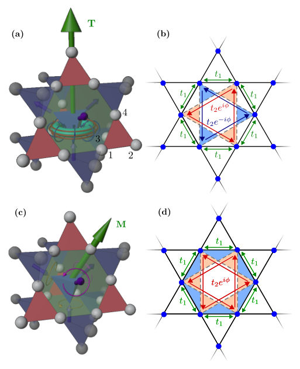
<figcaption class="paper-figure-caption"><b>Fig 1.</b> FIG. 1. Frustrated topological orbital magnetic orders. (a), (c) Pyrochlore lattice realizations of geometrically frustrated orbital magnetism and corresponding staggered magnetic fluxes. (b), (d) Kagome planes illustrating the Aharonov–Bohm phases (φ) and tunnelling amplitudes between nearest neighbor (t1), and next- nearest neighbor (t2) orbitals. (a) Frustrated toroidal orbital magnet with toroidization T in a 1-in-3-out (dark purple arrows) tetrahedral configuration of antichiral orbital magnetization cur- rents. (b) Antichiral pattern of fluxes, resulting in frustrated topological orbital ferrotoroidic order.(c) Frustrated orbital ferro- magnetic order with Weyl semimetal topology and...</figcaption>
</figure>
<figure class="paper-figure-card">
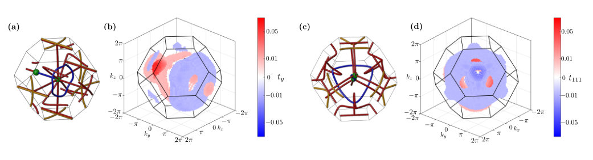
<figcaption class="paper-figure-caption"><b>Fig 2.</b> FIG. 2. Frustrated orbital toroidization from PT -symmetric non-Abelian topological nodal lines. (a), (c) Topological nodal lines underpinning the toroidization through non-Abelian Berry connection vortices in 2-in-2-out and 3-in-1-out flux configurations, respectively. (b), (d) Momentum-space-resolved toroidization densities contributed by single-particle states supporting the nodal structures over the BZ, in 2-in-2-out and 3-in-1-out antichiral Aharonov–Bohm flux configurations. The nodal lines between bands n = 1,2, n = 2,3, and n = 3,4 are shown in red, blue, and yellow, respectively. The green spheres represent the triple nodal points.</figcaption>
</figure>
<figure class="paper-figure-card">
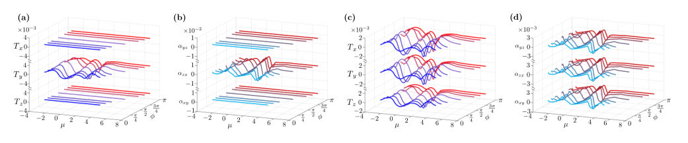
<figcaption class="paper-figure-caption"><b>Fig 3.</b> FIG. 3. Controlling frustrated ferrotoroidic orbital magnetic orders. (a) Orbital toroidization (Tx,Ty,Tz) and (b) asymmetric magnetoelectric tensor (αxy,αyz,αzx) components as a function of chemical potential µ and magnetic flux φ, in a 2-in-2-out pattern. (c), (d) Same for a 3-in- 1-out pattern. The anisotropic magnetoelectric tensor components can be experimentally accessed via zero-field current-induced Hall effects.</figcaption>
</figure>
<figure class="paper-figure-card">
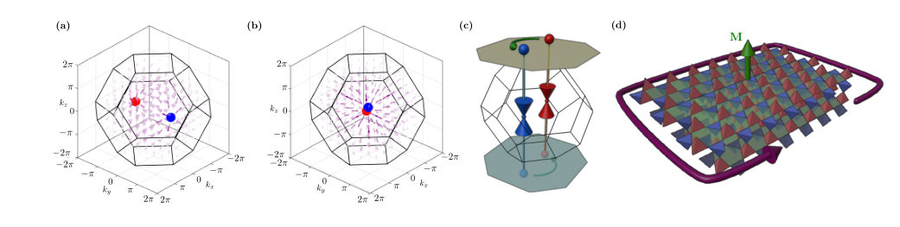
<figcaption class="paper-figure-caption"><b>Fig 4.</b> FIG. 4. Frustrated orbital Weyl magnets. Topological Weyl nodes carrying positive (red) and negative (blue) Berry curvatures that arise in 2-in-2-out (a) and 3-in-1-out (b) frustrated orbital magnetic orders. (c) Fermi arcs arising in frustrated orbital Weyl magnets on the pyrochlore lattice. (d) Bulk orbital magnetization and chiral edge current due to the Weyl nodes in a pyrochlore FTOM.</figcaption>
</figure>
<figure class="paper-figure-card">
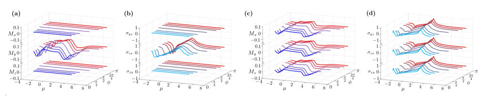
<figcaption class="paper-figure-caption"><b>Fig 5.</b> FIG. 5. Probing frustrated orbital magnets with Weyl topology. (a) Orbital magnetization (Mx,My,Mz) and (b) anisotropic Hall conductivity tensor components (σxy,σyz,σzx) as a function of the chemical potential µ and flux φ, for the 2-in-2-out flux configuration. (c) and (d) same for the 3-in-1-out flux configuration.</figcaption>
</figure>
</div>

<p><strong>Summary.</strong> This work introduces the concept of frustrated topological orbital magnetism by analyzing systems where geometric frustration interacts with magnetic fluxes. The authors theoretically establish that this interplay leads to measurable orbital magnetic orders, such as toroidization and magnetization. These orders are diagnosed by unique transport signatures, including current-induced Hall effects, providing clear targets for experimental material searches.</p>
<p><strong>Why it may be interesting.</strong> While focused on condensed matter magnetism, the deep reliance on topological invariants (Berry curvature, nodal lines) and the connection between geometric frustration and emergent macroscopic responses (Hall effects) provides a rich theoretical framework applicable to understanding exotic quantum states in other systems.</p>
<details>
<summary>Detailed structure</summary>
<p><strong>Main problem.</strong> The paper investigates 'frustrated topological orbital magnetism' (FTOMs) by studying the complex interplay between geometric frustration and Aharonov-Bohm fluxes in three dimensions.</p>
<p><strong>Main result.</strong> The authors identify two classes of FTOMs characterized by ground-state orbital toroidization (T) or net orbital magnetization (M), linking these orders to specific topological nodal lines and measurable Hall effects.</p>
<p><strong>Method.</strong> The study employs theoretical analysis using Bloch Hamiltonians, calculating topological invariants like the Berry connection and quadrupole moment, and deriving signatures for various Hall effects.</p>
<p><strong>Model / system.</strong> The model uses effective spinless Hamiltonians on the pyrochlore lattice, incorporating nearest and next-nearest neighbor hopping terms coupled to staggered Aharonov-Bohm fluxes.</p>
<p><strong>Key observables.</strong> Orbital toroidization (T), net orbital magnetization (M), current-induced zero-field Hall effect, anisotropic anomalous Hall effects, and the Berry curvature dipole (D_ij).</p>
<p><strong>Important parameters / regimes.</strong> Flux patterns (e.g., 2-in-2-out, 3-in-1-out), lattice geometry (pyrochlore/kagome), and the presence/absence of P and T symmetries.</p>
<p><strong>Assumptions / limitations.</strong> The analysis focuses on spinless lattice models, assuming orbital magnetic orders can be realized in the limit of vanishing spin-orbital coupling.</p>
<p><strong>Figures summary.</strong> Figures illustrate different types of frustrated orbital magnetic orders and associated flux patterns, and show topological nodal lines underpinning toroidization related to specific flux configurations.</p>
<p><strong>Paper structure.</strong> The paper progresses by defining the physical problem (FTOMs), deriving mathematical tools (quadrupole moment, Berry connection), establishing the link between toroidization and nodal lines, and finally detailing the measurable consequences like nonlinear Hall effects.</p>
</details>
<details>
<summary>Abstract</summary>
<p>By studying the interplay of geometric frustration with Aharonov-Bohm fluxes in three dimensions, we unveil a rich playground exhibiting topological semimetallic ground states with orbital magnetic dipole, quadrupole and ferrotoroidic orders, akin to spin patterns in classical spin ices - a class of phenomena which we dub frustrated topological orbital magnetism. We demonstrate that the ground-state toroidizations underpinned by non-Abelian topological nodal lines induce measurable current-induced Hall phenomena. We further find that distinct 2-in-2-out and 3-in-1-out frustrated orbital current patterns can be associated with topological Weyl node charges, and corresponding anisotropic linear and nonlinear Hall effects. We propose signatures for experimental validation of distinct frustrated topological orbital magnetic orders in candidate materials.</p>
</details>
<p><sub><a href="#top">↑ back to top</a></sub></p>

<p><a id="paper-2610.12726"></a></p>
<h3 id="homogeneous-to-multi-scale-inhomogeneous-complex-magnetism-in-ba3lnru2o9-ln-gd-ho-revealed-by-musr-and-machine-learned-muon-site-calculations"><a href="http://arxiv.org/abs/2610.12726v1">Homogeneous to multi-scale inhomogeneous complex magnetism in Ba3LnRu2O9 (Ln = Gd, Ho), Revealed by muSR and Machine-Learned Muon-Site Calculations</a></h3>
<p><strong>Authors:</strong> S. Ghosh, K. Sharma, E. Kushwaha, M. Kumar, G. Roy, A. Pandey, F. L. Pratt, S. Cottrell, D. T. Adroja, T. Basu<br>
<strong>Type:</strong> both · <strong>Category:</strong> strongly correlated electrons · <strong>PDF:</strong> <a href="https://arxiv.org/pdf/2610.12726v1">https://arxiv.org/pdf/2610.12726v1</a><br>
<strong>Analysis basis:</strong> full PDF text, analyzed in chunks
<strong>Topic relevance:</strong> <code>quantum measurements</code> <strong>3/5</strong> · <code>analog quantum simulation</code> <strong>1/5</strong></p>
<div class="figure-strip-hint">↔ Scroll figures horizontally</div>
<div class="paper-figures-scroll">
<figure class="paper-figure-card">
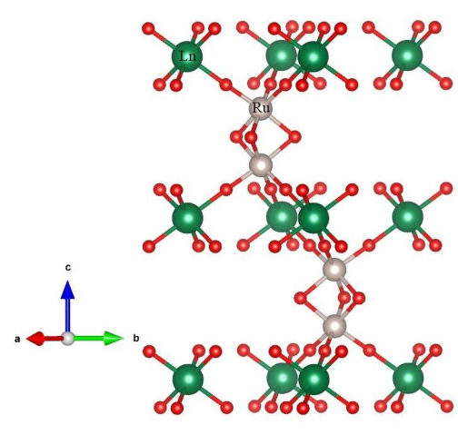
<figcaption class="paper-figure-caption"><b>Fig 1.</b> FIG. 1. Crystal structure of the hexagonal 6H-perovskite Ba3LnRu2O9 (Ln = Ho, Gd), showing face-sharing Ru2O9 dimers connected through corner-sharing LnO6 octahedra. The geometry supports competing Ru-Ru and Ru-Ln mag- netic interactions.</figcaption>
</figure>
<figure class="paper-figure-card">
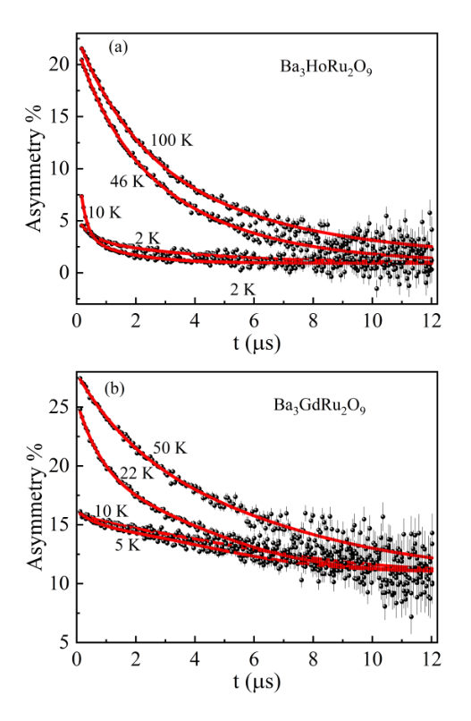
<figcaption class="paper-figure-caption"><b>Fig 2.</b> FIG. 2. ZF µSR asymmetry spectra at selected temperatures for (a) Ba3HoRu2O9 and (b) Ba3GdRu2O9. Solid lines are fits using Eq. (2) and Eq. (3), respectively. The Ho compound shows two-component exponential relaxation, whereas the Gd compound exhibits Gaussian-like relaxation consistent with a more homogeneous magnetic state.</figcaption>
</figure>
<figure class="paper-figure-card">
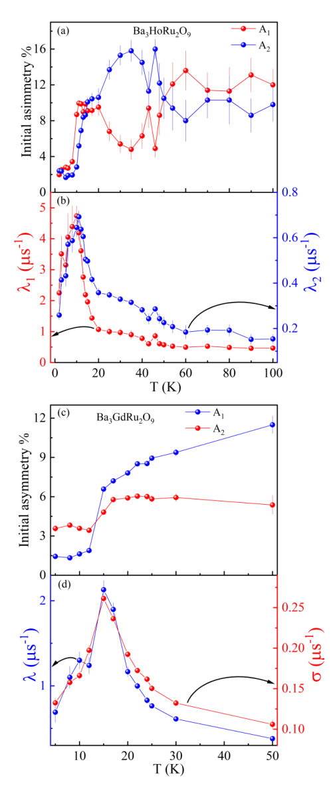
<figcaption class="paper-figure-caption"><b>Fig 3.</b> FIG. 3. Temperature dependence of the ZF µSR fitting parameters. (a,b) Initial asymmetries and relaxation rates for Ba3HoRu2O9, showing magnetic anomalies near 10 K and persistent correlations up to 46 K. (c,d) Corresponding pa- rameters for Ba3GdRu2O9, with a clear peak near 14.5 K associated with antiferromagnetic ordering.</figcaption>
</figure>
<figure class="paper-figure-card">
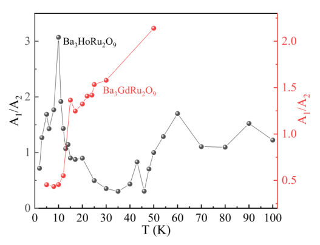
<figcaption class="paper-figure-caption"><b>Fig 4.</b> FIG. 4. Temperature dependence of the initial asymmetry ratio A1/A2 for Ba3HoRu2O9 (black spheres, left axis) and Ba3GdRu2O9 (red spheres, right axis).</figcaption>
</figure>
<figure class="paper-figure-card">
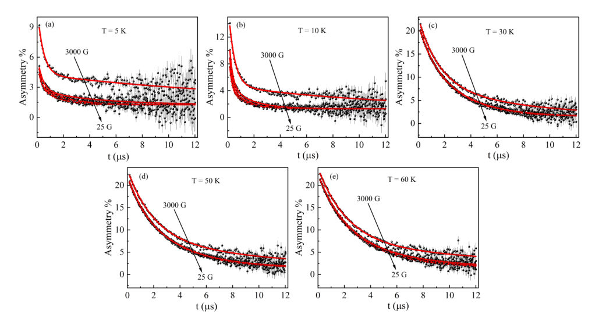
<figcaption class="paper-figure-caption"><b>Fig 5.</b> FIG. 5. LF µSR asymmetry spectra of Ba3HoRu2O9 measured under different longitudinal fields at (a) 5 K, (b) 10 K, (c) 30 K, (d) 50 K, and (e) 60 K. Solid lines are fits using Eq. (2). Partial LF decoupling and remaining relaxation indicate coexistence of quasi-static and dynamic magnetism.</figcaption>
</figure>
</div>

<p><strong>Summary.</strong> This work uses muon spin rotation ($\mu	ext{SR}$) to compare the magnetic ordering in $  ext{Ba}_3   ext{LnRu}_2 ext{O}_9$ using $   ext{Ho}$ and $  ext{Gd}$. The results show that $   ext{Ho}$ leads to a complex, multi-scale inhomogeneous magnetic state, while $  ext{Gd}$ yields a conventional, homogeneous state. This confirms that the rare-earth ion acts as a critical tuning parameter controlling the magnetic ground state via $4d$-$4f$ interactions.</p>
<p><strong>Why it may be interesting.</strong> The use of $\mu	ext{SR}$ to distinguish between different types of magnetic disorder (static vs. dynamic, homogeneous vs. multi-scale) provides a powerful experimental handle on complex magnetic ground states, which is relevant for understanding frustrated or correlated electron systems.</p>
<details>
<summary>Detailed structure</summary>
<p><strong>Main problem.</strong> To investigate how the rare-earth ion ($  ext{Ln}$) controls the magnetic ground state in $4d$-$4f$ coupled perovskites, specifically distinguishing between homogeneous and complex, multi-scale inhomogeneous magnetism.</p>
<p><strong>Main result.</strong> The magnetic state transitions from complex, multi-scale inhomogeneity in $    ext{Ba}_3   ext{HoRu}_2 ext{O}_9$ to a homogeneous state in $   ext{Ba}_3   ext{GdRu}_2 ext{O}_9$, demonstrating the rare-earth ion as a key tuning parameter.</p>
<p><strong>Method.</strong> The study combines experimental muon spin rotation ($\mu	ext{SR}$) measurements (ZF and LF) with machine-learning-assisted muon-site calculations to probe local magnetic environments.</p>
<p><strong>Model / system.</strong> The physical system is the hexagonal $6	ext{H}$-perovskite $   ext{Ba}_3   ext{LnRu}_2 ext{O}_9$ ($    ext{Ln} =   ext{Gd},    ext{Ho}$), focusing on the interplay between $4d$ ($ ext{Ru}$) and $4f$ ($    ext{Ln}$) magnetic moments.</p>
<p><strong>Key observables.</strong> Muon spin relaxation rates ($\lambda$), asymmetry spectra $A(t)$, and the identification of multiple magnetic energy scales (e.g., near $46	ext{ K}$ and $10	ext{ K}$).</p>
<p><strong>Important parameters / regimes.</strong> The rare-earth ion ($   ext{Ln}$), which dictates the degree of magnetic anisotropy and the nature of the $4f$ coupling.</p>
<p><strong>Assumptions / limitations.</strong> The analysis assumes that $\mu	ext{SR}$ probes local magnetic fields, and that the observed relaxation functions (Gaussian vs. two-component exponential) accurately distinguish between static and dynamic magnetic disorder.</p>
<p><strong>Figures summary.</strong> Figures compare $\mu	ext{SR}$ spectra, showing two-component exponential relaxation for $    ext{Ho}$ (inhomogeneous) versus Gaussian-like relaxation for $  ext{Gd}$ (homogeneous).</p>
<p><strong>Paper structure.</strong> The paper establishes the scientific problem by comparing $    ext{Ba}_3   ext{HoRu}_2 ext{O}_9$ and $ ext{Ba}_3   ext{GdRu}_2 ext{O}_9$. It presents $\mu	ext{SR}$ data showing distinct relaxation behaviors, which are then interpreted using ML calculations to confirm the structural origin of the magnetic inhomogeneity, concluding with the role of the rare-earth ion as a tuning knob.</p>
</details>
<details>
<summary>Abstract</summary>
<p>We report a comprehensive muon spin rotation and relaxation (muSR) study of the hexagonal 6H-perovskites Ba3LnRu2O9 (Ln = Gd, Ho) to investigate the role of rare-earth anisotropy in the magnetic ground state of 4d-4f coupled systems. Ba3HoRu2O9 exhibits two successive magnetic orderings at TN1 = 46 K and TN2 = 10 K, leading to a complex magnetic ground state, whereas Ba3GdRu2O9, with Gd3+ (L = 0) S-state ions, shows primarily single magnetic ordering at TN = 14.5 K. Zero-field (ZF) and longitudinal-field (LF) muSR measurements reveal markedly different magnetic behavior despite their structural similarity. Ba3HoRu2O9 displays a multi-scale inhomogeneous magnetic state characterized by two-component exponential relaxation, broad local-field distributions, incomplete LF decoupling, and persistent spin dynamics. The muSR results identify two characteristic magnetic energy scales near 46 and 10 K, associated with correlated Ru-Ho interactions and quasistatic magnetic ordering, respectively. Redfield analysis further demonstrates strong local magnetic fields and distributed spin fluctuation timescales, confirming magnetic inhomogeneity. Machine-learning-assisted muon-site and dipolar-field calculations show that the broad field distribution naturally arises from muons sensing distinct coexisting magnetic domains at different structural sites. In contrast, Ba3GdRu2O9 exhibits a comparatively homogeneous antiferromagnetic ground state below 14.5 K, with Gaussian relaxation consistent with a narrow static field distribution. These results establish that the rare-earth ion in Ba3LnRu2O9 is a powerful tuning parameter, driving the ground state from homogeneous to complex, multi-scale inhomogeneous behavior through competing 4d-4f magnetic interactions.</p>
</details>
<p><sub><a href="#top">↑ back to top</a></sub></p>

<p><a id="paper-2610.13346"></a></p>
<h3 id="interplay-of-disorder-and-spin-liquid-physics-in-the-triangular-lattice-antiferromagnet-ybzn2gao5"><a href="http://arxiv.org/abs/2610.13346v1">Interplay of disorder and spin liquid physics in the triangular-lattice antiferromagnet YbZn2GaO5</a></h3>
<p><strong>Authors:</strong> Hafsa Zeroual, Shams Sohel Islam, Toni Shiroka, Thomas James Hicken, Rabindranath Bag, Sara Haravifard, Hubertus Luetkens, Philippe Mendels, Edwin Kermarrec, Fabrice Bert<br>
<strong>Type:</strong> experiment · <strong>Category:</strong> strongly correlated electrons · <strong>PDF:</strong> <a href="https://arxiv.org/pdf/2610.13346v1">https://arxiv.org/pdf/2610.13346v1</a><br>
<strong>Analysis basis:</strong> full PDF text, analyzed in chunks
<strong>Topic relevance:</strong> <code>analog quantum simulation</code> <strong>3/5</strong> · <code>quantum measurements</code> <strong>1/5</strong></p>
<div class="figure-strip-hint">↔ Scroll figures horizontally</div>
<div class="paper-figures-scroll">
<figure class="paper-figure-card">
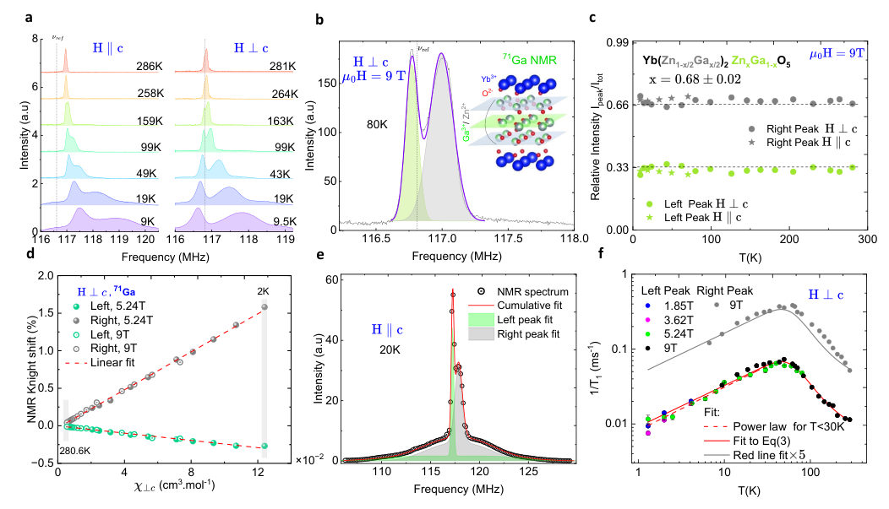
<figcaption class="paper-figure-caption"><b>Fig 1.</b> FIG. 1. a Evolution with temperature of the 71Ga NMR central line normalized to the maximum for H ∥c and H ⊥c, measured at 8.996 T. The dashed vertical line at νref = 116.808 MHz indicates the reference frequency. b At low temperatures, the 71Ga NMR central line splits into two and is fitted with two Gaussians (purple curve). Filling colors reflect the two distinct crystallographic sites. c Relative weights of the two central lines. d NMR line shift of the two sites for H ⊥c as a function of the bulk susceptibility measured at 5 T. The temperature range is 2–280 K, while the applied magnetic field is 8.996 or 5.24 T. Red lines represent linear fits of K vs χ. e Complete 71Ga NMR spectrum...</figcaption>
</figure>
<figure class="paper-figure-card">
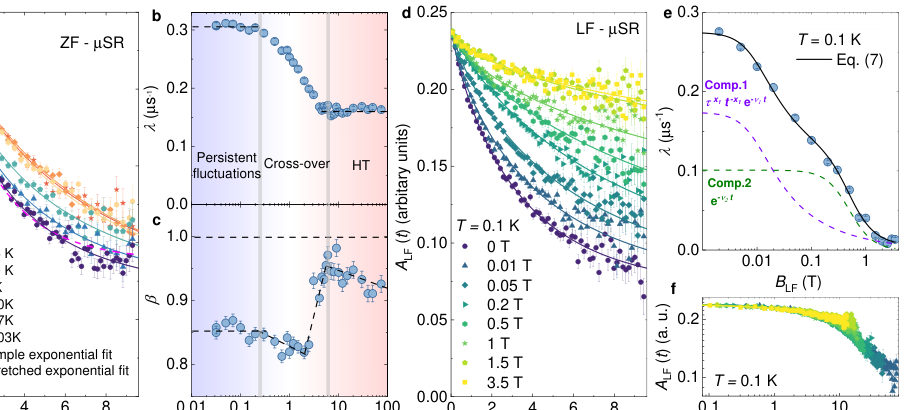
<figcaption class="paper-figure-caption"><b>Fig 2.</b> FIG. 2. a Temperature evolution of the ZF muon spin asymmetry, AZF(t) for YbZn2GaO5. Dashed and solid lines represent fits using simple- and stretched-exponential functions. b The temperature dependence of the muon-spin relaxation rate suggests three distinct regimes: high temperature (HT), crossover, and persistent fluctuations. c Temperature dependence of the stretch exponent β. d Muon-spin asymmetry curves ALF(t) for different longitudinal fields at a fixed temperature, T ≃0.1 K. e Longitudinal field (LF) dependence of the muon-spin relaxation rate λ. The solid line represents a two-component fit [power- law + Redfield, Eq. (7)], while the violet and green dashed lines show the...</figcaption>
</figure>
</div>

<p><strong>Summary.</strong> This work uses NMR and muSR on YbZn2GaO5 to probe its magnetic state, finding clear evidence of structural disorder due to site mixing. Crucially, the measurements demonstrate that dynamic spin fluctuations persist to very low temperatures, suggesting that the material retains QSL-like behavior despite the structural imperfections.</p>
<p><strong>Why it may be interesting.</strong> The combination of structural probes (NMR) with advanced magnetic relaxation measurements (muSR) to diagnose the stability of exotic quantum states (QSL) in the presence of disorder is highly relevant to understanding frustrated magnetism in correlated materials.</p>
<details>
<summary>Detailed structure</summary>
<p><strong>Main problem.</strong> The study investigates the complex interplay between structural disorder and the potential for a U(1) Dirac quantum spin-liquid (QSL) ground state in the triangular-lattice antiferromagnet YbZn2GaO5.</p>
<p><strong>Main result.</strong> The experiments confirm substantial structural disorder (Ga/Zn site mixing) but also show persistent, dynamic spin fluctuations down to the lowest measured temperatures, suggesting the survival of QSL-like excitations despite the disorder.</p>
<p><strong>Method.</strong> The research employs complementary experimental techniques: 71Ga Nuclear Magnetic Resonance (NMR) to probe local structural disorder and spin dynamics, and Muon Spin Relaxation (muSR) to measure low-energy spin fluctuations.</p>
<p><strong>Model / system.</strong> The physical system is YbZn2GaO5, a triangular-lattice antiferromagnet. The analysis models the spin dynamics using theoretical frameworks like 2D+0D spin relaxation components to characterize the nature of spin correlations.</p>
<p><strong>Key observables.</strong> NMR spin-lattice relaxation rate (power-law temperature dependence), muSR relaxation rates (lambda_1, lambda_2), and the quadrupolar frequency distribution.</p>
<p><strong>Important parameters / regimes.</strong> Low temperatures (down to 30 mK), the exchange energy scale, and the structural mixing ratio (x = 0.68 +/- 0.02).</p>
<p><strong>Assumptions / limitations.</strong> The analysis assumes that the observed spin dynamics can be decomposed into spatially extended (2D) and localized (0D) fluctuation channels.</p>
<p><strong>Figures summary.</strong> Figures show NMR spectra confirming two inequivalent sites and the temperature dependence of the spin-lattice relaxation rate. MuSR data illustrate the temperature evolution of relaxation rates, which are modeled using a 2D+0D component fit.</p>
<p><strong>Paper structure.</strong> The paper progresses by first establishing the structural disorder using NMR, then characterizing the magnetic dynamics using both NMR (power-law relaxation) and muSR (2D+0D fitting), culminating in the conclusion that dynamic fluctuations persist despite structural imperfections.</p>
</details>
<details>
<summary>Abstract</summary>
<p>YbZn2GaO5 has recently emerged as a structurally ideal triangular-lattice antiferromagnet and a promising candidate for hosting a U(1) Dirac quantum spin-liquid (QSL) ground state. However, signatures of broadened crystal electric field (CEF) excitations have raised questions about potential site disorder and its impact on the intrinsic spin dynamics. In this study, we employ 71Ga nuclear magnetic resonance (NMR) and muon spin relaxation (muSR) to microscopically probe both the structural and magnetic properties of YbZn2GaO5. NMR spectra reveal two inequivalent 71Ga sites and a broad distribution of quadrupolar frequencies, providing clear evidence of Ga$^{3+}$/Zn$^{2+}$ site mixing and local CEF randomness. The NMR spin-lattice relaxation rate exhibits, down to 1.3~K, a power-law temperature dependence, consistent with persisting spin dynamics below the exchange energy scale in a frustrated magnet. Complementary muSR measurements further show that the spin dynamics persist down to 30mK, with no signs of spin freezing. Together, these results establish that YbZn2GaO5 presents substantial structural disorder, while the persistence of dynamic spin fluctuations down to the lowest temperatures may indicate the survival of QSL-like excitations despite such disorder.</p>
</details>
<p><sub><a href="#top">↑ back to top</a></sub></p>

<p><a id="paper-2610.13107"></a></p>
<h3 id="role-of-composition-tuned-disorder-on-magnetic-exchange-interactions-in-nirumnga"><a href="http://arxiv.org/abs/2610.13107v1">Role of composition-tuned disorder on magnetic exchange interactions in NiRuMnGa</a></h3>
<p><strong>Authors:</strong> Manikantha Panda, Prabuddha Kant Mishra, Vinod Kumar, Wilfrid Prellier, Rahul Sharma, Tapas Paramanik<br>
<strong>Type:</strong> both · <strong>Category:</strong> disordered systems and neural networks · <strong>PDF:</strong> <a href="https://arxiv.org/pdf/2610.13107v1">https://arxiv.org/pdf/2610.13107v1</a><br>
<strong>Analysis basis:</strong> full PDF text, analyzed in chunks
<strong>Topic relevance:</strong> <code>analog quantum simulation</code> <strong>3/5</strong> · <code>scars &amp; prethermalization</code> <strong>1/5</strong></p>
<div class="figure-strip-hint">↔ Scroll figures horizontally</div>
<div class="paper-figures-scroll">
<figure class="paper-figure-card">
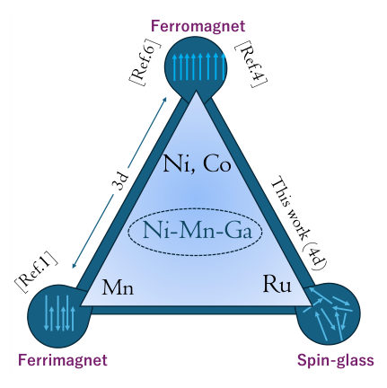
<figcaption class="paper-figure-caption"><b>Fig 1.</b> Figure 1. (Color online) Compositional tuning of magnetic properties in Ni-Mn-Ga based Heusler alloys.</figcaption>
</figure>
<figure class="paper-figure-card">
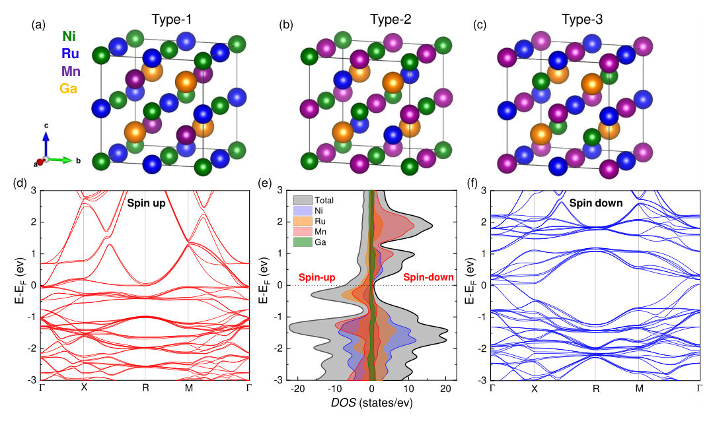
<figcaption class="paper-figure-caption"><b>Fig 2.</b> Figure 2. (Color online) (a-c) Crystal structure of NiRuMnGa considering different Wyckoff position of constituent element while fixing Ga at 4d position. (d) Majority spin-up band. (e) Density of states. (f) Minority spin-down band.</figcaption>
</figure>
<figure class="paper-figure-card">
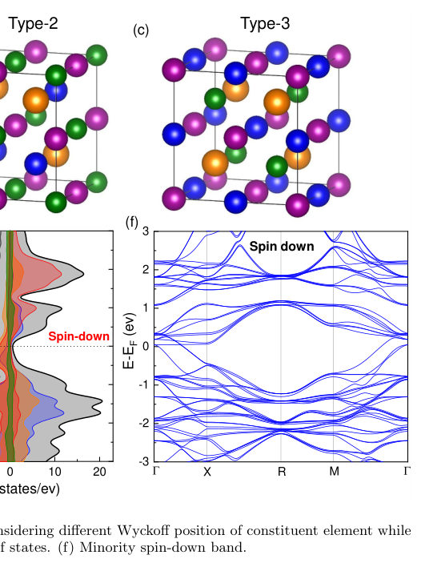
<figcaption class="paper-figure-caption"><b>Fig 3.</b> Figure 3(a) presents the room-temperature powder X-ray diffraction (PXRD) pattern (scattered circles) of the pow- dered polycrystalline NiRuMnGa sample, together with the Rietveld refinement profile (red line), Bragg reflection po- sitions, and the corresponding difference curve. The ex- perimental pattern is well reproduced by the calculated profile for the fundamental Bragg reflections, and no ad- ditional reflections attributable to secondary phases are observed, confirming the formation of a single-phase com- pound within the detection limit of PXRD. The refine- ment indicates that NiRuMnGa crystallizes in the cu- bic LiMgPdSn-type structure with space group F43m (No. 216), with a...</figcaption>
</figure>
<figure class="paper-figure-card">
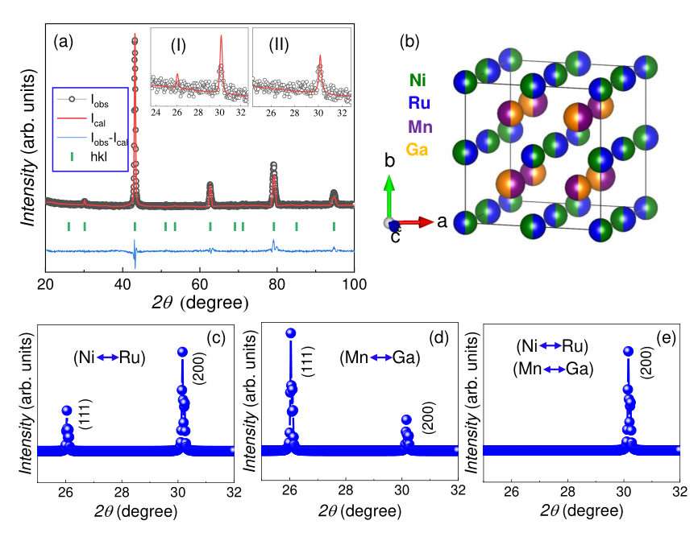
<figcaption class="paper-figure-caption"><b>Fig 4.</b> Figure 3. (Color online) (a) Rietveld refinement of the room-temperature powder X-ray diffraction (PXRD) pattern of polycrys- talline NiRuMnGa. The vertical tick marks indicate the Bragg reflection positions, while the blue curve represents the difference between the observed and calculated diffraction profiles. The inset (I) and (II) shows the fitting of super lattice reflections for ordered and disordered structure, respectively. (b) Crystal structure of NiRuMnGa with 50% B2-type disorder. (c–e) Simulated PXRD patterns showing the enlarged view of the (111) and (200) superlattice reflections generated using VESTA software for (c) 50% Ni–Ru disorder, (d) 50% Mn–Ga disorder, and (e) 50%...</figcaption>
</figure>
<figure class="paper-figure-card">
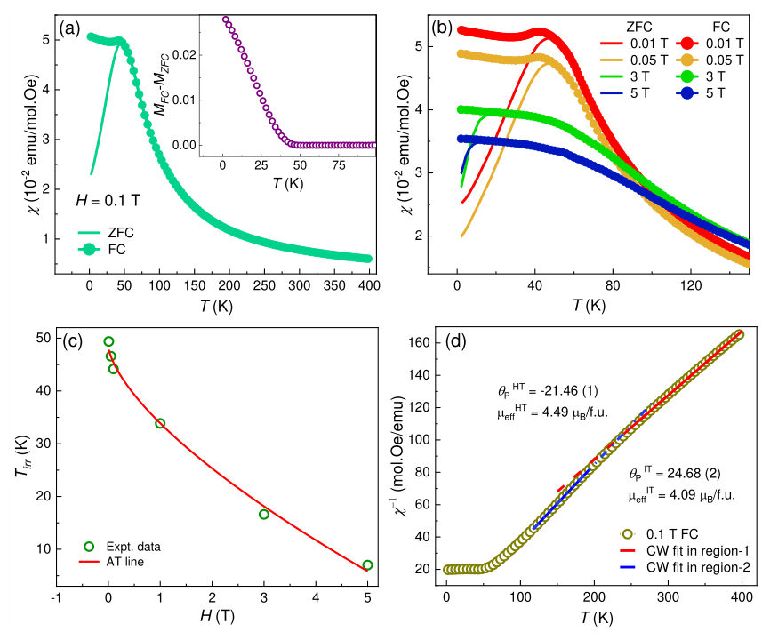
<figcaption class="paper-figure-caption"><b>Fig 5.</b> Figure 4. (Color online) (a) Temperature dependence of dc susceptibility χ(T) measured under zero-field-cooled (ZFC) and field- cooled (FC) protocols at an applied field of 0.1 T for NiRuMnGa. The inset shows MFC −MZFC as a function of temperature. (b) Temperature dependence of magnetization under ZFC and FC conditions at applied fields of 0.01, 0.05, 3 and 5 T. (c) AT line shows the variation of Tirr with applied field. (d) Inverse susceptibility χ−1(T) at an applied field of 0.1 T along with the Curie–Weiss fit using Eq. (6).</figcaption>
</figure>
</div>

<p><strong>Summary.</strong> This paper experimentally and computationally investigates the magnetic properties of the NiRuMnGa Heusler alloy, focusing on the impact of compositional disorder. The findings reveal strong evidence for magnetic frustration due to competing exchange interactions, leading to a cluster glass state rather than conventional long-range magnetic order. This work highlights how structural imperfections can stabilize complex, disordered magnetic ground states.</p>
<p><strong>Why it may be interesting.</strong> The focus on glassy magnetic states, spin-glass behavior, and the role of structural disorder in mediating complex magnetic interactions is highly relevant to understanding frustrated quantum many-body systems.</p>
<details>
<summary>Detailed structure</summary>
<p><strong>Main problem.</strong> The study investigates how compositional disorder affects the magnetic exchange interactions within the quaternary Heusler alloy NiRuMnGa.</p>
<p><strong>Main result.</strong> The competition between ferromagnetic and antiferromagnetic interactions, exacerbated by structural disorder, leads to the stabilization of a cluster glass magnetic state in the material.</p>
<p><strong>Method.</strong> The research combines experimental measurements (PXRD, DC/AC magnetometry, heat capacity) with first-principles electronic structure calculations.</p>
<p><strong>Model / system.</strong> The physical system is the quaternary Heusler alloy NiRuMnGa. The structural disorder is characterized as B2-type site intermixing, and the magnetic behavior is modeled by analyzing competing exchange interactions.</p>
<p><strong>Key observables.</strong> ZFC-FC irreversibility, slow spin dynamics (AC susceptibility), unsaturated magnetization, and the absence of a conventional heat-capacity anomaly.</p>
<p><strong>Important parameters / regimes.</strong> The magnetic transition temperature ($\sim 48$ K), the applied magnetic field (up to 7 T), and the degree of site disorder.</p>
<p><strong>Assumptions / limitations.</strong> The study assumes the LiMgPdSn-type crystal structure and interprets the magnetic response based on established models for glassy magnetic states.</p>
<p><strong>Figures summary.</strong> Figures illustrate the crystal structure, spin-resolved DOS, and magnetic measurements (ZFC/FC curves, AC susceptibility) confirming glassy magnetic behavior.</p>
<p><strong>Paper structure.</strong> The paper follows a structure of structural characterization (PXRD/Rietveld refinement revealing disorder), electronic structure calculation (DOS/polarization), and comprehensive magnetic characterization (DC/AC measurements) to build a case for magnetic frustration.</p>
</details>
<details>
<summary>Abstract</summary>
<p>We report the experimental investigation of the quaternary Heusler alloy NiRuMnGa, complemented by first-principles calculations. The energetically favorable crystal structure was identified from first-principles calculations and subsequently used as the structural model for refinement of the powder X-ray diffraction data. The refinement shows good agreement with the experimental pattern and reveals substantial B2-type disorder involving Ni/Ru and Mn/Ga site intermixing. The dc magnetic response exhibits pronounced ZFC--FC irreversibility near $\sim 48$ K, with the irreversibility temperature shifting toward lower temperatures under increasing magnetic field, indicating a field-sensitive glassy state. The isothermal magnetization remains unsaturated up to 7 T, reaching only $\sim 0.4\,μ_{\mathrm{B}}$/f.u., accompanied by pronounced hysteresis, suggesting competing exchange interactions and frustrated magnetic moments. AC susceptibility, together with magnetic relaxation and memory measurements, confirms slow spin dynamics characteristic of a cluster glass state. The lack of a discernible heat-capacity anomaly near the irreversibility temperature further supports the absence of conventional long-range magnetic order. Collectively, these results demonstrate that competition between ferromagnetic and antiferromagnetic interactions in NiRuMnGa leads to magnetic frustration and stabilizes a cluster glass state.</p>
</details>
<p><sub><a href="#top">↑ back to top</a></sub></p>

<p><a id="paper-2610.13907"></a></p>
<h3 id="a-scalable-sample-based-quantum-diagonalization-solver-for-general-pauli-sum-hamiltonians"><a href="http://arxiv.org/abs/2610.13907v1">A scalable sample-based quantum diagonalization solver for general Pauli-sum Hamiltonians</a></h3>
<p><strong>Authors:</strong> Yutaro Iiyama<br>
<strong>Type:</strong> theory · <strong>Category:</strong> numerical methods · <strong>PDF:</strong> <a href="https://arxiv.org/pdf/2610.13907v1">https://arxiv.org/pdf/2610.13907v1</a><br>
<strong>Analysis basis:</strong> full PDF text, analyzed in chunks
<strong>Topic relevance:</strong> <code>analog quantum simulation</code> <strong>3/5</strong></p>
<div class="figure-strip-hint">↔ Scroll figures horizontally</div>
<div class="paper-figures-scroll">
<figure class="paper-figure-card">
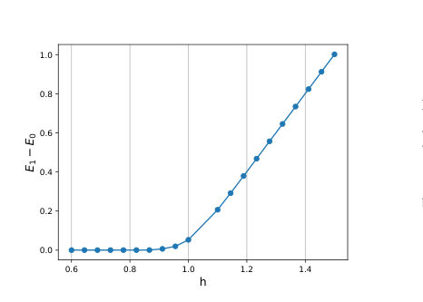
<figcaption class="paper-figure-caption"><b>Fig 1.</b> Fig. 1. Validation of the conjugate gradient eigensolver</figcaption>
</figure>
</div>

<p><strong>Summary.</strong> This paper introduces a highly scalable, GPU-accelerated solver for finding the ground state of quantum systems described by Pauli-sum Hamiltonians using Sample-based Quantum Diagonalization (SQD). It details the implementation of a specialized eigensolver and matrix-vector product optimized for massive parallel computing. The work demonstrates strong scaling and successfully validates the method on the transverse-field Ising model.</p>
<p><strong>Why it may be interesting.</strong> The development of highly scalable, GPU-optimized, matrix-free solvers is crucial for simulating quantum many-body systems beyond the reach of traditional diagonalization methods, directly impacting research in quantum magnetism and condensed matter theory.</p>
<details>
<summary>Detailed structure</summary>
<p><strong>Main problem.</strong> The paper addresses the need for a scalable ground-state solver for Sample-based Quantum Diagonalization (SQD) applied to general Pauli-sum Hamiltonians.</p>
<p><strong>Main result.</strong> A scalable solver built on JAX API is presented, capable of subspace diagonalization in very large dimensions and demonstrating good strong scaling on many-GPU HPC facilities.</p>
<p><strong>Method.</strong> It combines a locally optimal conjugate gradient (LOCG) eigensolver with a specialized, matrix-free matrix-vector operation tailored for Pauli-sum Hamiltonians.</p>
<p><strong>Model / system.</strong> The methodology is tested using the one-dimensional transverse-field Ising model (TFIM) as a physical validation case. The general Hamiltonian is a Pauli-sum: H = sum(c_k P_k).</p>
<p><strong>Key observables.</strong> The two lowest energy eigenvalues ($E_0, E_1$) of the TFIM, and the energy gap ($E_1 - E_0$).</p>
<p><strong>Important parameters / regimes.</strong> Subspace dimension ($N$) up to $2^{30}-1$; the number of parallel GPU nodes (up to 128).</p>
<p><strong>Assumptions / limitations.</strong> The matrix-vector operation must perform the projection in situ to avoid storing the full reduced Hamiltonian matrix; the eigensolver relies on the matrix being Hermitian.</p>
<p><strong>Figures summary.</strong> Figure 1a shows the energy gap vs. magnetic field for the 30-site TFIM, and Figure 1b shows the time-to-completion scaling with the number of parallel nodes, demonstrating good strong scaling.</p>
<p><strong>Paper structure.</strong> The paper first introduces the general problem of SQD for Pauli-sum Hamiltonians. It details the implementation using JAX for the eigensolver (LOCG) and the specialized matrix-vector operation. Validation is performed on the TFIM, demonstrating both the numerical results and the scalability of the implementation.</p>
</details>
<details>
<summary>Abstract</summary>
<p>A scalable ground-state solver to be used in sample-based quantum diagonalization (SQD) is presented. The solver is built on JAX API, and is intended to be run on GPU platforms and possibly many-GPU high-performance computing facilities. It is capable of subspace diagonalization in up to $2^{30}$-dimensional subspace, with possible upgrades to enable even larger-scale operations. The two main components, a general-purpose eigensolver and an SQD-specific matrix-vector operation function, are described in detail. Efficiency of the eigensolver with respect to the GPU memory is demonstrated using a simple physics model. Furthermore, good strong scaling of the eigensolver in many-GPU environment is observed.</p>
</details>
<p><sub><a href="#top">↑ back to top</a></sub></p>

<p><a id="paper-2610.12908"></a></p>
<h3 id="classification-of-bipartite-observables-ii-nip-observables-and-the-todorcevic-trichotomy"><a href="http://arxiv.org/abs/2610.12908v1">Classification of bipartite observables II: NIP observables and the Todorcevic trichotomy</a></h3>
<p><strong>Authors:</strong> Eduardo Dueñez, José Iovino<br>
<strong>Type:</strong> theory · <strong>Category:</strong> statistical mechanics · <strong>PDF:</strong> <a href="https://arxiv.org/pdf/2610.12908v1">https://arxiv.org/pdf/2610.12908v1</a><br>
<strong>Analysis basis:</strong> full PDF text, analyzed in chunks
<strong>Topic relevance:</strong> <code>quantum measurements</code> <strong>3/5</strong></p>
<div class="figure-strip-hint">↔ Scroll figures horizontally</div>
<div class="paper-figures-scroll">
<figure class="paper-figure-card">
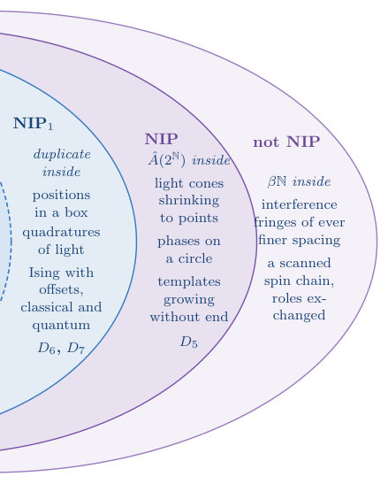
<figcaption class="paper-figure-caption"><b>Fig 1.</b> Figure 1. The classes of observables and of families of responses, with their physical examples and the minimal families of the heptachotomy that they contain. The regions are nested: uniformly stable ⊆stable ⊆NIP3 ⊆NIP2 ⊆NIP1 ⊆NIP. The innermost examples are those of Part I [DI26].</figcaption>
</figure>
<figure class="paper-figure-card">
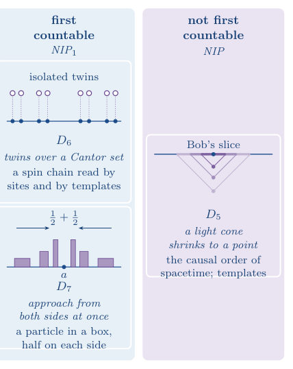
<figcaption class="paper-figure-caption"><b>Fig 2.</b> Figure 2. The seven minimal families of the heptachotomy, arranged by the class of the Todorˇcevi´c trichotomy to which their closures belong, each with the physical picture of its realization (Theorem 8.5): how a tree of preparations approaches its idealized limits.</figcaption>
</figure>
<figure class="paper-figure-card">
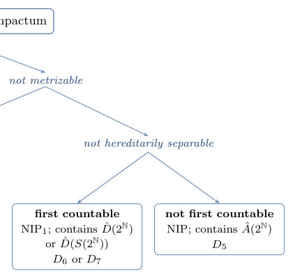
<figcaption class="paper-figure-caption"><b>Fig 3.</b> Figure 3. The Todorˇcevi´c trichotomy as a decision tree, with the canonical compacta and the minimal families of the heptachotomy at its leaves (compare [DIMW+26, Section 4.2]). For observables the dashed leaf merges with the metrizable one (Theorem 6.6).</figcaption>
</figure>
</div>

<p><strong>Summary.</strong> This paper classifies bipartite quantum observables by mapping their idealized response functions onto abstract mathematical structures derived from model theory and descriptive set theory. It establishes that physical properties like stability correspond to specific mathematical regularity conditions (e.g., being of the first Baire class). The work provides a powerful, abstract framework for understanding the limitations and structure of quantum measurements.</p>
<p><strong>Why it may be interesting.</strong> It provides a deep, abstract framework for understanding when quantum measurements are well-behaved (stable/NIP) by connecting quantum information diagnostics to fundamental results in set theory and model theory.</p>
<details>
<summary>Detailed structure</summary>
<p><strong>Main problem.</strong> The paper classifies bipartite quantum observables by linking their mathematical properties (like the NIP condition) to topological and set-theoretic structures (Todorčević trichotomy). It aims to establish a rigorous dictionary between abstract model theory and physical measurements.</p>
<p><strong>Main result.</strong> The classification shows that observables fall into distinct mathematical classes (related to the Todorčević trichotomy), with specific physical examples like photon number comparison belonging to certain NIP levels.</p>
<p><strong>Method.</strong> The analysis heavily employs advanced mathematical tools, including model theory (NIP property, Shelah's dividing lines) and descriptive set theory (Rosenthal compacta, Todorčević trichotomy).</p>
<p><strong>Model / system.</strong> The study focuses on bipartite observables measured on two independent quantum systems. Specific models analyzed include the Ising model in a transverse field, photon number comparisons, and position/causal order comparisons.</p>
<p><strong>Key observables.</strong> Idealized responses of observables, stability, NIP property, superfluid weight ($D_s$), and Drude weight ($D$).</p>
<p><strong>Important parameters / regimes.</strong> The analysis depends on the order of limits when calculating expectation values (e.g., $\lim_{m	o 0} \lim_{V	o\infty}$ vs. $\lim_{V	o\infty} \lim_{m	o 0}$), and the gap structure of excitations.</p>
<p><strong>Assumptions / limitations.</strong> The analysis relies on the mathematical validity of idealized preparations (limits) and specific assumptions (S1) and (S2) regarding spectral representations.</p>
<p><strong>Figures summary.</strong> Figures map the classification space, showing how physical systems realize the seven minimal families derived from the Todorčević trichotomy.</p>
<p><strong>Paper structure.</strong> The paper progresses by defining stability and the NIP property for observables, relating these to the structure of their idealized response sets (Rosenthal compacta), and then mapping this structure onto the known classification schemes from model theory (Todorčević trichotomy).</p>
</details>
<details>
<summary>Abstract</summary>
<p>A bipartite observable is stable when its idealized responses are continuous. We show that it is NIP exactly when they are of the first Baire class. They then form a Rosenthal compactum, and the dividing lines of Shelah in model theory, together with the classification of Rosenthal compacta of Todorčević, acquire a physical meaning. For observables, mixtures of states make every hereditarily separable compactum of idealized responses metrizable, and the Todorčević trichotomy becomes a classification into three classes. Each class contains a physical order: the comparison of photon numbers, the comparison of positions, and the causal order of spacetime, whose idealized responses are not first countable because a light cone can shrink to a point; the comparison of two phases on a circle joins it there. Each of the seven minimal families of the heptachotomy, which Argyros, Dodos and Kanellopoulos extracted from the methods of Todorčević, is realized by a tree of preparations of photons, of a particle in a box, or of a spin chain read by a probe; the spin chain also shows that NIP, unlike its uniform version, is not symmetric between the two parties. Finally, for the Ising model in a transverse field we show that, in the ordered phase, the responses of the two pure phases form split pairs whose midpoints, the responses of the symmetric state, form an uncountable discrete set; the proof uses a Lee--Yang theorem for this model.</p>
</details>
<p><sub><a href="#top">↑ back to top</a></sub></p>

<p><a id="paper-2610.13652"></a></p>
<h3 id="finite-size-limits-of-adaptive-pauli-prediction"><a href="http://arxiv.org/abs/2610.13652v1">Finite-Size Limits of Adaptive Pauli Prediction</a></h3>
<p><strong>Authors:</strong> Luofei Wang, Boyu Liu, Zihe Wang, Zhangqi Yin<br>
<strong>Type:</strong> theory · <strong>Category:</strong> quantum information and computing · <strong>PDF:</strong> <a href="https://arxiv.org/pdf/2610.13652v1">https://arxiv.org/pdf/2610.13652v1</a><br>
<strong>Analysis basis:</strong> full PDF text, analyzed in chunks
<strong>Topic relevance:</strong> <code>quantum measurements</code> <strong>3/5</strong></p>
<div class="figure-strip-hint">↔ Scroll figures horizontally</div>
<div class="paper-figures-scroll">
<figure class="paper-figure-card">
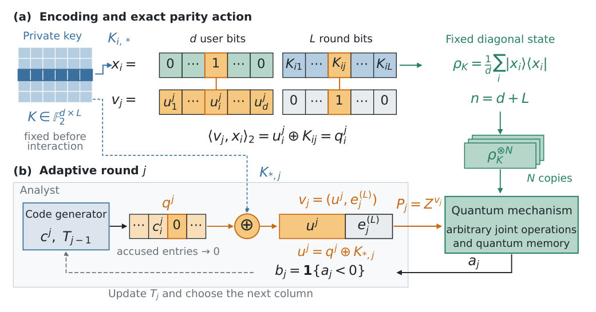
<figcaption class="paper-figure-caption"><b>Fig 1.</b> FIG. 1. Fixed-state realization of an adaptive fingerprinting attack (schematic). (a) The analyst’s private matrix K, fixed before interaction, defines xi = (e(d) i , Ki,∗) and the diagonal state ρK, on d + L qubits before padding. The highlighted coordinates give ⟨vj, xi⟩2 = uj i ⊕Kij = qj i . (b) The analyst zeros accused entries, masks the resulting column, and submits one Pauli query. The mechanism receives the initial state copies and arriving queries. Its answer determines bj, which updates accusations and the next code column. Dashed arrows carry the private round pad and response feedback. Register lengths are schematic.</figcaption>
</figure>
<figure class="paper-figure-card">
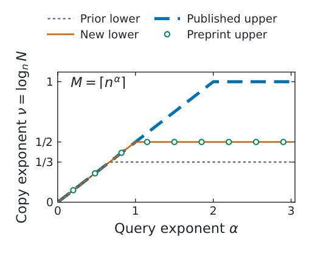
<figcaption class="paper-figure-caption"><b>Fig 2.</b> FIG. 2. Theoretical polynomial exponents at fixed accuracy for M = ⌈nα⌉. The old lower bound is min{α/2, 1/3} and the new lower bound is min{α, 1}/2. The published HLHP upper exponent is min{α/2, 1}. The online preprint upper expo- nent coincides with the new lower curve; symbols distinguish them. Logarithmic factors are suppressed in this exponent plot, including the remaining upper-bound factor log n for fixed α &gt; 1. The curves are analytic bounds, not fitted data.</figcaption>
</figure>
<figure class="paper-figure-card">

<figcaption class="paper-figure-caption"><b>Fig 3.</b> Figure 2 distinguishes this exponent statement from the published upper bound. The logarithmic interval for α &gt; 1 remains, and intermediate budgets can retain smaller gaps; for example, M = ⌈n log n⌉gives Ω(√n) ≤N ∗≤ O(√n log n). For diagonal inputs, computational-basis measurement identifies the corresponding classical problem of adaptive parity prediction from n-bit samples. HLHP already give a finite-dimensional lower bound for this class; Eq. (2) improves its dependence on the number of bits. For gen- eral bounded queries, our instantiation of Theorem 12 of Ref. [20] on a 2n-point universe gives an Ωα(√n log n)</figcaption>
</figure>
</div>

<p><strong>Summary.</strong> This work establishes the fundamental resource cost for performing adaptive Pauli predictions on quantum states. It proves that the required number of quantum copies scales as $\Theta(\sqrt{\min\{n, M\}})$, which is significantly different from the cost required for non-adaptive measurements. This result sets a key benchmark for quantum information processing tasks.</p>
<p><strong>Why it may be interesting.</strong> The rigorous quantification of the data cost associated with adaptive quantum queries provides fundamental limits on quantum machine learning and quantum state tomography protocols.</p>
<details>
<summary>Detailed structure</summary>
<p><strong>Main problem.</strong> The paper determines the minimum quantum data (number of copies) required for an adaptive Pauli prediction task, where subsequent measurements depend on previous outcomes.</p>
<p><strong>Main result.</strong> The required number of copies scales as $\Theta(\sqrt{\min\{n, M\}})$ for $M \le n$, establishing a tight bound by matching lower and upper bounds.</p>
<p><strong>Method.</strong> The authors use information-theoretic fingerprinting frameworks, constructing lower bounds using diagonal states and analyzing the information flow through adaptive measurements.</p>
<p><strong>Model / system.</strong> The model involves estimating the expectation value of Pauli observables ($ ext{Tr}(P_j 
ho)$) on $n$ qubits using $N$ copies of an unknown state $
ho$ in an adaptive query setting.</p>
<p><strong>Key observables.</strong> Minimum required copy budget $N^*(n, M)$, Pauli observables $P_j$, and the estimation error $\epsilon$.</p>
<p><strong>Important parameters / regimes.</strong> $n$ (number of qubits), $M$ (number of queries), $\epsilon$ (accuracy), and the scaling factor $\sqrt{\min\{n, M\}}$.</p>
<p><strong>Assumptions / limitations.</strong> The lower bound proof relies on mapping the quantum prediction mechanism to a legal fingerprinting coalition, and the analysis assumes a fixed accuracy $\epsilon_0$.</p>
<p><strong>Figures summary.</strong> Figure 1 schematically illustrates the adaptive fingerprinting process using a private key $K$ and Pauli queries. Figure 2 compares theoretical polynomial exponents for fixed accuracy bounds.</p>
<p><strong>Paper structure.</strong> The paper develops bounds by first establishing a lower bound using information theory (fingerprinting) and then matching this with existing published upper bounds to prove the scaling law $N^*(n, M) = \Theta(\sqrt{M})$ for $M \le n$.</p>
</details>
<details>
<summary>Abstract</summary>
<p>Can quantum data reliably answer questions chosen from earlier results? We prove that $M$ adaptive Pauli predictions on $n$ qubits require $Ω(\sqrt{\min\{n,M\}})$ copies at fixed accuracy. Published upper bounds make this tight for $M\le n$. Thus $n$ adaptive predictions cost $Θ(\sqrt n)$ copies, whereas a fixed list costs only $O(\log n)$. The lower bound uses diagonal states and commuting observables, identifying a statistical cost of adaptation. We also quantify how this cost increases with precision.</p>
</details>
<p><sub><a href="#top">↑ back to top</a></sub></p>

<p><a id="paper-2610.13168"></a></p>
<h3 id="real-fiducial-vectors-only-exist-in-dimensions-math312math"><a href="http://arxiv.org/abs/2610.13168v1">Real Fiducial Vectors Only Exist in Dimensions $d\equiv 3 \pmod{4}$</a></h3>
<p><strong>Authors:</strong> Igor Van Loo, Frédérique Oggier<br>
<strong>Type:</strong> theory · <strong>Category:</strong> other · <strong>PDF:</strong> <a href="https://arxiv.org/pdf/2610.13168v1">https://arxiv.org/pdf/2610.13168v1</a><br>
<strong>Analysis basis:</strong> full PDF text, analyzed in chunks
<strong>Topic relevance:</strong> <code>quantum measurements</code> <strong>3/5</strong></p>
<div class="figure-strip-hint">↔ Scroll figures horizontally</div>
<div class="paper-figures-scroll">
<figure class="paper-figure-card">
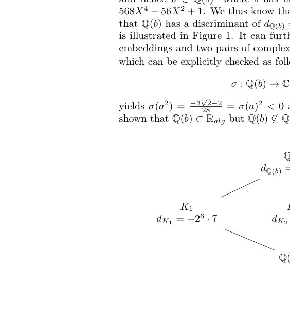
<figcaption class="paper-figure-caption"><b>Fig 1.</b> Figure 1: The number field Q(b) in which the coefficients of the fiducial vector of Theorem 2.2 exist, with its subfields and their respective discriminants.</figcaption>
</figure>
<figure class="paper-figure-card">
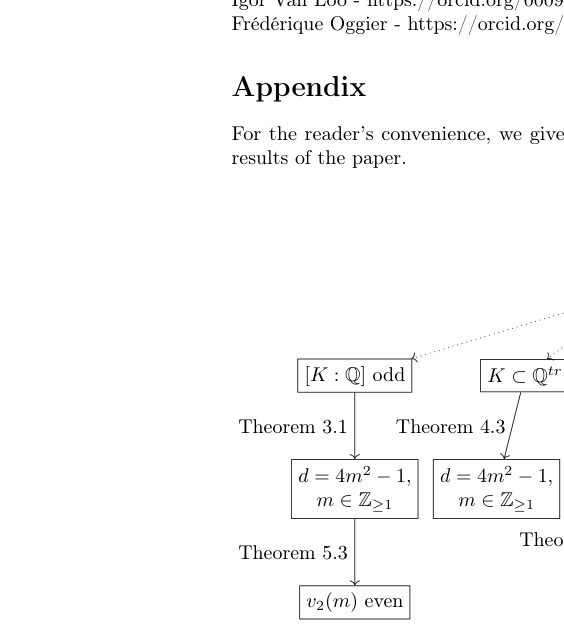
<figcaption class="paper-figure-caption"><b>Fig 2.</b> Figure 2: Restrictions on the dimension d in which a real fiducial vector can exist in, based on its coordinate field. Dotted arrows represent a subcase, full arrows represent an implication.</figcaption>
</figure>
</div>

<p><strong>Summary.</strong> This paper uses advanced algebraic number theory to determine the necessary mathematical conditions for the existence of real Weyl-Heisenberg fiducial vectors, which are key components in defining SIC-POVMs. The central finding is that such vectors can only exist in dimensions $d$ congruent to 3 modulo 4. The work demonstrates that the structure of the underlying number field imposes severe restrictions on the possible dimensions.</p>
<p><strong>Why it may be interesting.</strong> While highly abstract, the constraints derived here place severe mathematical limitations on the physical realization of certain quantum states (SIC-POVMs), which are fundamental tools in quantum measurement theory and quantum information.</p>
<details>
<summary>Detailed structure</summary>
<p><strong>Main problem.</strong> The paper investigates the strict mathematical restrictions on the dimensions ($d$) and coordinate fields ($\mathbb{K}$) for the existence of real Weyl-Heisenberg fiducial vectors associated with SIC-POVMs.</p>
<p><strong>Main result.</strong> The primary result is that such real fiducial vectors can only exist in dimensions $d$ such that $d \equiv 3 \pmod{4}$. Furthermore, existence is highly constrained based on the algebraic structure of the coordinate field $\mathbb{K}$.</p>
<p><strong>Method.</strong> The analysis heavily employs algebraic number theory, utilizing concepts like 2-adic valuations, ramification indices, and properties of field extensions ($\mathbb{K}/\mathbb{Q}$) to derive necessary conditions for the existence of the vectors.</p>
<p><strong>Model / system.</strong> The study is rooted in the mathematical structure underlying Symmetric Informationally Complete Positive-Operator-Valued Measures (SIC-POVMs) in quantum information theory. The core object is the real fiducial vector $v \in \mathbb{R}^d$ that defines these measures.</p>
<p><strong>Key observables.</strong> The existence of the real fiducial vector $v$, and the associated inner product relations derived from the equiangular nature of the generated lines.</p>
<p><strong>Important parameters / regimes.</strong> The dimension $d$, the structure of the coordinate field $\mathbb{K}$ (e.g., totally real, quadratic, cyclotomic), and the congruence class of $d$ modulo 4.</p>
<p><strong>Assumptions / limitations.</strong> The analysis often proceeds by assuming the existence of the vector $v$ within a specific number field $\mathbb{K}$ and relies on conjectures regarding the containment of the field generated by the projector $\Pi(v)$.</p>
<p><strong>Figures summary.</strong> Figure 2 summarizes the main restrictions on the dimension $d$ for the existence of a real fiducial vector based on the algebraic properties of the coordinate field $\mathbb{K}$.</p>
<p><strong>Paper structure.</strong> The paper progresses by first establishing necessary conditions for the existence of real fiducial vectors (e.g., ruling out even dimensions). It then systematically analyzes the constraints imposed by the algebraic number field $\mathbb{K}$ (e.g., totally real, odd degree) using advanced tools like 2-adic valuations to narrow down possible dimensions to $d \equiv 3 \pmod{4}$.</p>
</details>
<details>
<summary>Abstract</summary>
<p>We investigate restrictions on the dimensions and coordinate fields of real Weyl-Heisenberg fiducial vectors. Our main result is that such vectors can exist only in dimensions $d\equiv 3\pmod{4}$. This result is motivated by evidence showing that real Weyl-Heisenberg fiducial vectors can exist only in dimensions $d = 4m^2 + 3, m \in \mathbb{Z}_{\geq 0}$. We further restrict the possible dimensions when the coordinate field is a totally real number field, an even or odd degree extension of $\mathbb{Q}$, a real quadratic field, or a maximal real subfield of a cyclotomic field. Lastly, we establish non-existence over odd-degree number fields under either positivity of all non-trivial cyclic-shift overlaps or a conjectural containment of a distinguished quadratic field in the SIC field.</p>
</details>
<p><sub><a href="#top">↑ back to top</a></sub></p>

<p><a id="paper-2610.13880"></a></p>
<h3 id="bicycle-race-small-two-block-codes-on-the-pareto-frontier"><a href="http://arxiv.org/abs/2610.13880v1">Bicycle Race: small two-block codes on the Pareto frontier</a></h3>
<p><strong>Authors:</strong> Gideon Lee<br>
<strong>Type:</strong> theory · <strong>Category:</strong> quantum information and computing · <strong>PDF:</strong> <a href="https://arxiv.org/pdf/2610.13880v1">https://arxiv.org/pdf/2610.13880v1</a><br>
<strong>Analysis basis:</strong> full PDF text, analyzed in chunks
<strong>Topic relevance:</strong> <code>QC/QI experiment</code> <strong>2/5</strong> · <code>Rydberg arrays</code> <strong>2/5</strong> · <code>analog quantum simulation</code> <strong>2/5</strong></p>
<div class="figure-strip-hint">↔ Scroll figures horizontally</div>
<div class="paper-figures-scroll">
<figure class="paper-figure-card">
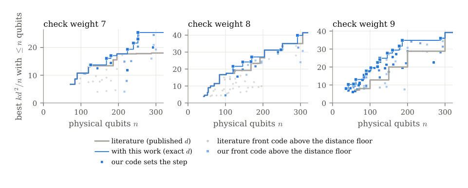
<figcaption class="paper-figure-caption"><b>Fig 1.</b> Figure 1: The best kd2/n available with at most n physical qubits, for CSS codes of check weight seven, eight and nine and n ≤320. Gray: the codes from our literature set alone; blue: with the codes of this work. Squares mark our codes that set a step; faint points are all codes on the (n, k, d) Pareto front whose distance clears the floor of their respective bands. A step can carry over to larger n through direct sums (two copies of a code keep kd2/n and double n). kd2/n weights distance heavily and was the figure of merit our searches optimized; the same comparison for kd/n, for the overhead n/k against d, and as Pareto fronts is in Apps. G.4 and G.1.</figcaption>
</figure>
<figure class="paper-figure-card">
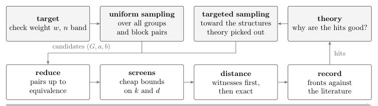
<figcaption class="paper-figure-caption"><b>Fig 2.</b> Figure 2: The search pipeline. Top: the outer loop. A target (check weight and n band) is first sampled uniformly over groups and block pairs; we then return to theory to try to explain what the good codes have in common. Later rounds then sample toward those structures. Bottom: every candidate (G, a, b) is reduced up to equivalence, screened with cheap bounds on k and d, and given a distance, witnesses first and exact for the survivors; the results are compared with the literature and may feed the next round.</figcaption>
</figure>
<figure class="paper-figure-card">
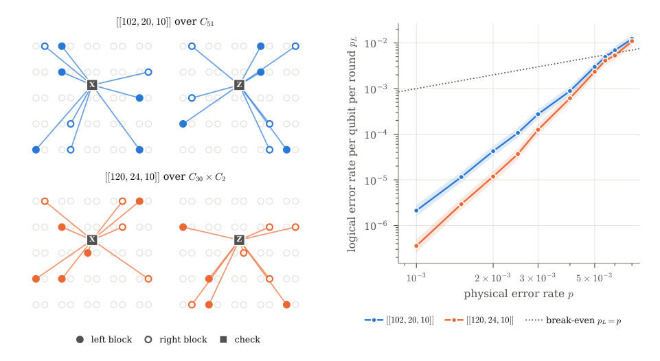
<figcaption class="paper-figure-caption"><b>Fig 3.</b> Figure 3: (a) The X and Z checks of each code on its most local twisted torus, which sit in a 5 × 5 window (App. B.3). Filled circles are left-block qubits, open circles right-block qubits, and the square is the check; every other check of the same type is a translation of the one shown. (b) Logical error rates of [[102, 20, 10]] (blue) and [[120, 24, 10]] (orange), per logical qubit per round, pL = 1 −(1 −Pfail)1/(10k), against the physical error rate p, averaged over X- and Z- memory experiments of 10 rounds. Circuits: one ancilla per check, circuit distance 8, on 204 and 240 qubits. Noise: depolarizing noise at gates, preparation, and measurement only, as in Refs. [ZDG+26, YDD26]. The...</figcaption>
</figure>
<figure class="paper-figure-card">
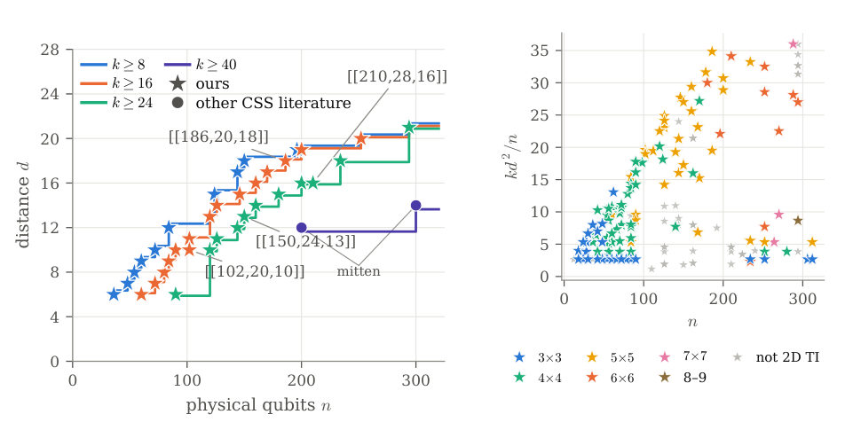
<figcaption class="paper-figure-caption"><b>Fig 4.</b> Figure 4: Check weight nine. (a) The best distance with at most n physical qubits and at least k logical qubits, for several k, at check weight nine (including all CSS codes with check weight nine and n ≤320 in the literature set). Markers give the code that sets each step, in the color of the largest k it serves: stars, new with this work; squares, two-block codes from the literature; circles, other literature codes, tagged by family; faint, literature codes whose distance is only an upper bound. This is the (n, k, d) Pareto front sliced at fixed k, with n kept on the horizontal axis. Check weight seven is in Fig. 11, and weights five, six and eight in Fig. 12. (b) Our weight-nine codes on...</figcaption>
</figure>
<figure class="paper-figure-card">
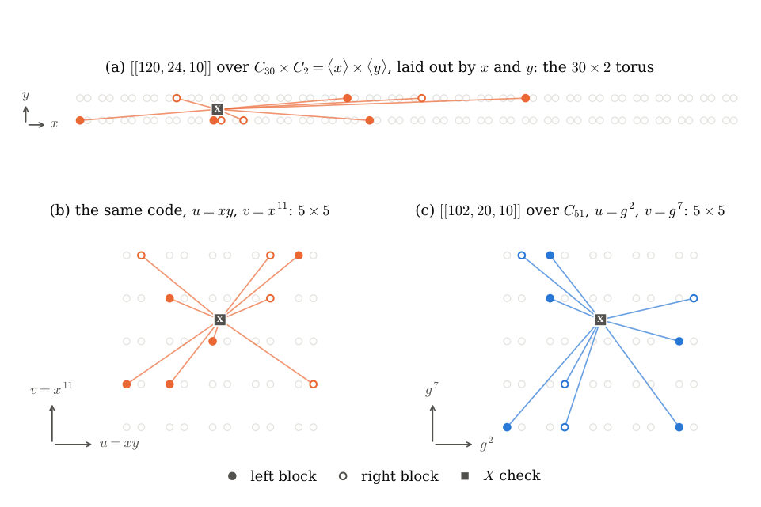
<figcaption class="paper-figure-caption"><b>Fig 5.</b> Figure 5: Layouts of two-block codes, drawn as in Fig. 3a: each site carries a left (filled) and a right (open) qubit, the square is the X check, and the arrows give the group elements that one step right and one step up act as. (a) [[120, 24, 10]] over C30 × C2 = ⟨x⟩× ⟨y⟩laid out by its generators: the ordinary 30 × 2 torus, on which one check spans 21 columns. (b) The same code laid out by u = xy and v = x11, a twisted torus: every check fits in 5 × 5 sites. (c) [[102, 20, 10]] over the cyclic group C51 = ⟨g⟩, which has a single generator, laid out by g2 and g7, again in 5 × 5.</figcaption>
</figure>
</div>

<p><strong>Summary.</strong> This paper performs an exhaustive, systematic search for optimal two-block quantum LDPC codes, analyzing their performance across various physical sizes and check weights. By developing specialized search pipelines, the authors establish new state-of-the-art performance records for key metrics like $kd^2/n$. The results are highly relevant for experimental quantum computing platforms, particularly those utilizing neutral atoms.</p>
<p><strong>Why it may be interesting.</strong> The explicit mention of suitability for neutral-atom arrays and movable qubits directly connects the abstract theory of quantum error correction to current, leading-edge experimental platforms in AMO physics.</p>
<details>
<summary>Detailed structure</summary>
<p><strong>Main problem.</strong> The paper systematically searches for and characterizes high-performing two-block quantum LDPC codes to map out their performance on the Pareto frontier.</p>
<p><strong>Main result.</strong> The authors census numerous two-block codes, setting new records for the $kd^2/n$ metric compared to published literature across various check weights and physical sizes up to 320 qubits.</p>
<p><strong>Method.</strong> The methodology involves designing an algebraic search pipeline using constraints to enumerate codes, followed by comparing performance metrics like $kd^2/n$ against established theoretical bounds.</p>
<p><strong>Model / system.</strong> The focus is on two-block group-algebra codes, which are a specific, simple class of quantum LDPC codes suitable for implementation on platforms like neutral-atom arrays.</p>
<p><strong>Key observables.</strong> Code parameters $(n, k, d)$ and performance metrics such as $kd^2/n$, $d/n$, and $n/k$.</p>
<p><strong>Important parameters / regimes.</strong> Check weights (specifically 5 through 9), physical qubit size ($n \le 320$), and the group structure (abelian vs. non-abelian).</p>
<p><strong>Assumptions / limitations.</strong> The search is computationally limited to $n \le 320$ and check weights up to nine; the analysis compares results against existing literature bounds.</p>
<p><strong>Figures summary.</strong> Figures systematically plot the Pareto fronts and performance metrics ($d$ vs $n$, $kd^2/n$ vs $n$) for various check weights, comparing the authors' results against literature bounds.</p>
<p><strong>Paper structure.</strong> The paper progresses by defining the search space, presenting exhaustive censuses for specific constraints (e.g., weight-six codes), and then systematically comparing the best found codes against established theoretical and experimental bounds across multiple figures and tables.</p>
</details>
<details>
<summary>Abstract</summary>
<p>Two-block group-algebra codes are among the simplest quantum LDPC codes, and many of them are translation invariant on a twisted torus, which suits neutral-atom arrays and other platforms with movable qubits. We ask how far they go at small sizes when searched systematically across all groups. To tackle this question, we use a series of algebraic constraints and screens to design a search pipeline capable of enumerating broad and complete swathes of two-block codes on a laptop. With it we census about $10^8$ two-block codes with up to $320$ qubits at check weights five to nine. Several of these censuses are exhaustive, and support complete statements; for instance, the Gross code is, up to equivalence, the only abelian weight-six two-block code with $n \le 200$ to reach $kd^2/n=12$, and the known $[[64,18,8]]$ is the best two-block code by $kd^2/n$ across weights five to nine with $n \le 94$. The censuses are also large enough to give insights into where good codes live - they concentrate in a handful of groups; abelian groups give the best codes at small $n$ and non-abelian groups at large $n$, with the crossover appearing to move out as the check weight grows; and high quality codes become $100$ to $1000$ times rarer per draw from weight six to weights eight and nine. Using the group algebra and the census data to steer a statistical search finds four to fifteen times as many good codes as uniform draws in equal time. Among the codes found are $[[102,20,10]]$ and $[[120,24,10]]$ at check weight nine, which we simulate in noisy syndrome-extraction circuits, and $[[288,16,16]]$, the best weight-six two-block code with $n \le 300$. At check weights seven to nine, our best codes exceed the best published $kd^2/n$ with exact distance at the same check weight in most length bands up to $320$ qubits. All codes are available in a public database.</p>
</details>
<p><sub><a href="#top">↑ back to top</a></sub></p>

<p><a id="paper-2610.13388"></a></p>
<h3 id="quantum-extreme-learning-for-forecasting-experimental-chaotic-electronic-circuits"><a href="http://arxiv.org/abs/2610.13388v1">Quantum extreme learning for forecasting experimental chaotic electronic circuits</a></h3>
<p><strong>Authors:</strong> Mohammad Sharifian, Qingyu Li, Chiranjib Mukhopadhyay, Abolfazl Bayat, Ludovico Minati<br>
<strong>Type:</strong> both · <strong>Category:</strong> disordered systems and neural networks · <strong>PDF:</strong> <a href="https://arxiv.org/pdf/2610.13388v1">https://arxiv.org/pdf/2610.13388v1</a><br>
<strong>Analysis basis:</strong> full PDF text, analyzed in chunks
<strong>Topic relevance:</strong> <code>analog quantum simulation</code> <strong>2/5</strong> · <code>QC/QI experiment</code> <strong>1/5</strong> · <code>methods for driven-dissipative</code> <strong>1/5</strong> · <code>quantum measurements</code> <strong>1/5</strong></p>
<div class="figure-strip-hint">↔ Scroll figures horizontally</div>
<div class="paper-figures-scroll">
<figure class="paper-figure-card">
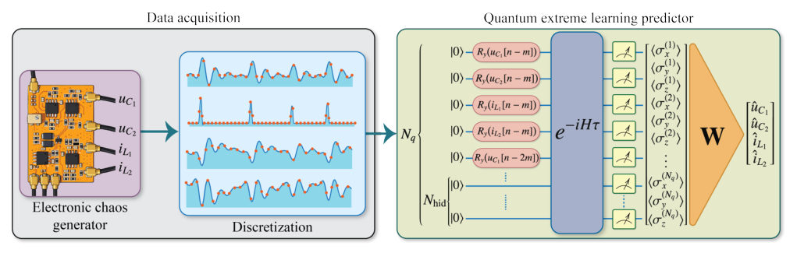
<figcaption class="paper-figure-caption"><b>Fig 1.</b> FIG. 1: Schematic overview of the proposed framework. The experimental electronic chaos generator produces four signals, uC1, uC2, iL1, and iL2, which are discretized using a sampling lag m determined from the first 1/e crossing of the autocorrelation function of each signal. Selected past samples, separated by this lag, are encoded into qubits through rotation encoding, while the remaining Nhid qubits remain in |0⟩. All qubits evolve under the reservoir Hamiltonian H for a time τ, followed by measurements of the local Pauli expectation values. The resulting measurement vector is used to train the linear readout and to predict the signal values.</figcaption>
</figure>
<figure class="paper-figure-card">
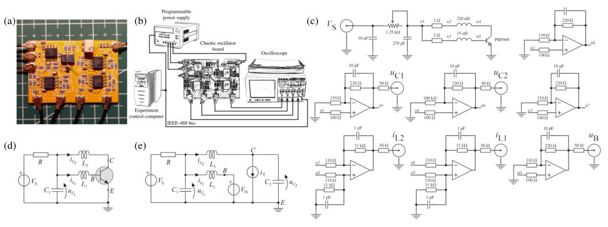
<figcaption class="paper-figure-caption"><b>Fig 2.</b> FIG. 2: Oscillator circuit topology and experimental implementation. (a) Oscillator printed circuit board realization. (b) Experi- mental measurement setup. (c) Detailed circuit implementation and signal-conditioning circuits. (d) Physical AECG circuit. (e) Equivalent circuit used for the dynamical model.</figcaption>
</figure>
<figure class="paper-figure-card">
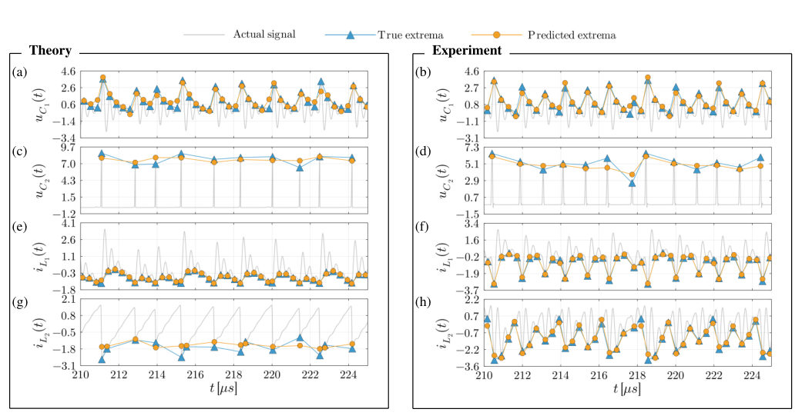
<figcaption class="paper-figure-caption"><b>Fig 3.</b> FIG. 3: Prediction results of maplike discretization. The left and right columns show the theory and experiment results, respec- tively: (a,b) uC1, (c,d) uC2, (e,f) iL1, and (g,h) iL2. The gray curves represent the actual continuous signals, while the triangles and circles represent the true and predicted extrema, respectively.</figcaption>
</figure>
<figure class="paper-figure-card">
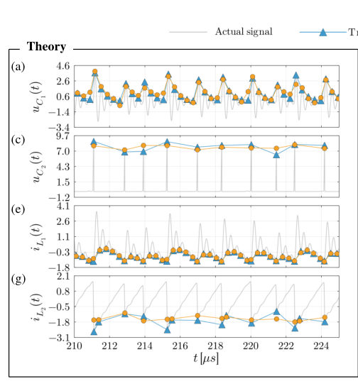
<figcaption class="paper-figure-caption"><b>Fig 4.</b> Figure 2(a) shows the printed circuit board used to realize the chaotic oscillator, while Fig. 2(b) presents the experimental measurement setup used to acquire the chaotic signals simul- taneously. The detailed circuit implementation, including the signal-conditioning stages, is shown in Fig. 2(c). The physi- cal topology and its reduced equivalent circuit are shown in Figs. 2(d) and 2(e), respectively. The transistor emitter is grounded, while its base and collector are connected through inductors L1 and L2, respectively, to a common node. This node is connected to ground through C1 and to the DC sup- ply VS through R. Its chaotic dynamics arise from the mutual interaction between a...</figcaption>
</figure>
<figure class="paper-figure-card">
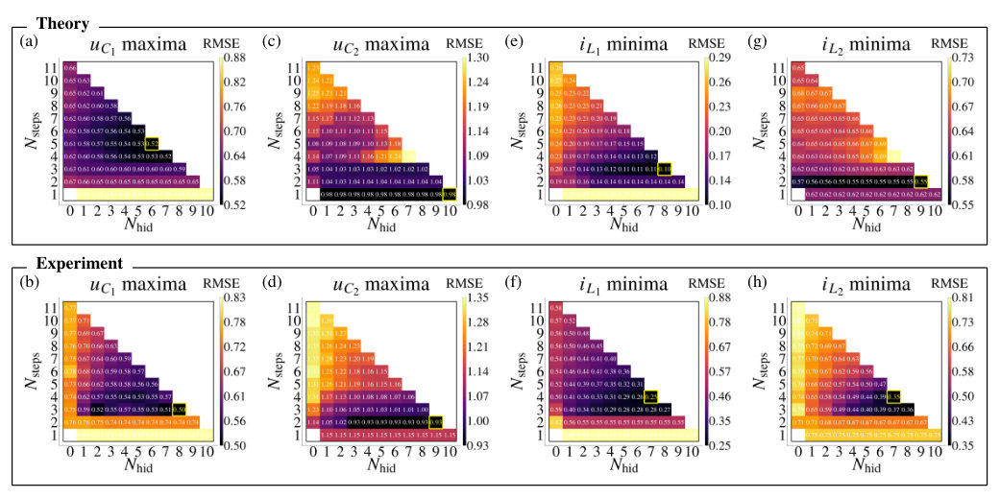
<figcaption class="paper-figure-caption"><b>Fig 5.</b> FIG. 4: Performance heatmap for maplike discretization. The top row shows the theoretical results and the bottom row shows the experimental results. Panels (a,b), (c,d), (e,f), and (g,h) correspond to uC1, uC2, iL1, and iL2, respectively.</figcaption>
</figure>
</div>

<p><strong>Summary.</strong> This work applies Quantum Extreme Learning (QEL) to forecast continuous time-series data generated by chaotic electronic circuits. It tackles the critical issue of discretizing continuous signals using two specialized sampling methods. The results show that QEL successfully predicts these complex dynamics, proving its utility for processing real-world, non-linear physical measurements on near-term quantum simulators.</p>
<p><strong>Why it may be interesting.</strong> The application of quantum machine learning techniques (QEL) to model and predict complex, non-linear, and chaotic dynamics from physical circuits provides a novel bridge between quantum computation and condensed matter/classical physics modeling.</p>
<details>
<summary>Detailed structure</summary>
<p><strong>Main problem.</strong> The paper addresses the challenge of forecasting continuous time-series signals, particularly those exhibiting chaotic behavior, using quantum computing devices.</p>
<p><strong>Main result.</strong> The Quantum Extreme Learning (QEL) algorithm achieves high forecasting accuracy for both simulated and experimental chaotic signals, demonstrating robustness against moderate decoherence.</p>
<p><strong>Method.</strong> The method involves encoding classical time-series data into quantum states, evolving these states under a quantum Hamiltonian, and then using linear regression on the measurement expectation values for prediction.</p>
<p><strong>Model / system.</strong> The system utilizes an experimental chaotic electronic circuit generating four continuous signals, and the quantum model employs an open nearest-neighbor XYZ spin chain Hamiltonian for evolution.</p>
<p><strong>Key observables.</strong> Forecasting accuracy quantified by Root Mean Square Error (RMSE) for four signals ($u_{C1}, u_{C2}, i_{L1}, i_{L2}$); autocorrelation function $R[k]$.</p>
<p><strong>Important parameters / regimes.</strong> Discretization lag ($m$) determined by the $1/e$ crossing of the autocorrelation function; quantum evolution time $   au$; number of steps ($N_{steps}$) and hidden qubits ($N_{hid}$).</p>
<p><strong>Assumptions / limitations.</strong> The primary assumption is that the QEL framework can effectively map continuous chaotic dynamics onto quantum measurements, and the discretization method must be carefully chosen (peak/trough vs. autocorrelation timescale).</p>
<p><strong>Figures summary.</strong> Figures illustrate the schematic framework of QEL (encoding, evolution, readout) and show the oscillator circuit topology and experimental setup.</p>
<p><strong>Paper structure.</strong> The paper introduces the problem of continuous signal forecasting, details the QEL protocol (encoding, evolution via Hamiltonian, readout), discusses two discretization approaches (maplike and uniform), and validates the method using both simulated and real experimental chaotic circuit data.</p>
</details>
<details>
<summary>Abstract</summary>
<p>Quantum reservoir computing and its special case, quantum extreme learning, are powerful tools for predicting classical discrete time-series with quantum devices. Forecasting continuous signals, however, requires careful discretization as oversampling artificially boosts short-term accuracy but fails over realistic intervals, while undersampling captures too few features and yields poor predictions. Here, we experimentally generate four continuous time-series signals from a chaotic electronic circuit for forecasting with quantum extreme learning. Since simplified circuit models do not fully capture real behaviour, it is unclear whether algorithms that predict simulated time-series also work for experimental signals. We address discretization via two approaches: (i) sampling local peaks/troughs; and (ii) uniform sampling at the autocorrelation timescale. The former captures resonant behaviour, while the latter fully captures chaotic features as well as allowing the reconstruction of chaotic attractors. Our algorithm achieves high forecasting accuracy for both simulated and experimental signals, demonstrating its power for continuous signal processing on near-term quantum simulators, and remains robust against moderate decoherence.</p>
</details>
<p><sub><a href="#top">↑ back to top</a></sub></p>

<p><a id="paper-2610.13754"></a></p>
<h3 id="utilizing-neural-networks-for-solving-functional-renormalization-group-flow-equations"><a href="http://arxiv.org/abs/2610.13754v1">Utilizing Neural Networks for Solving Functional Renormalization Group Flow Equations</a></h3>
<p><strong>Authors:</strong> J. Gurzó, G. Fejős<br>
<strong>Type:</strong> theory · <strong>Category:</strong> statistical mechanics · <strong>PDF:</strong> <a href="https://arxiv.org/pdf/2610.13754v1">https://arxiv.org/pdf/2610.13754v1</a><br>
<strong>Analysis basis:</strong> full PDF text, analyzed in chunks
<strong>Topic relevance:</strong> <code>Keldysh / 2PI / non-Gaussian methods</code> <strong>2/5</strong> · <code>methods for driven-dissipative</code> <strong>2/5</strong> · <code>analog quantum simulation</code> <strong>1/5</strong></p>
<div class="figure-strip-hint">↔ Scroll figures horizontally</div>
<div class="paper-figures-scroll">
<figure class="paper-figure-card">
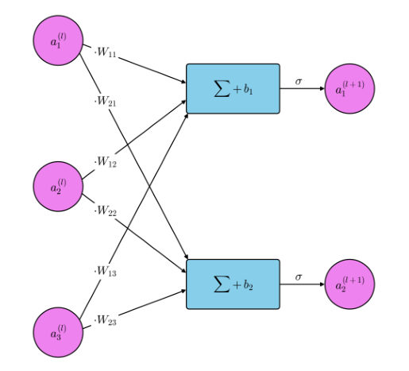
<figcaption class="paper-figure-caption"><b>Fig 1.</b> FIG. 1: The nonlinear transformation connecting consecutive activation layers of a FFN.</figcaption>
</figure>
<figure class="paper-figure-card">
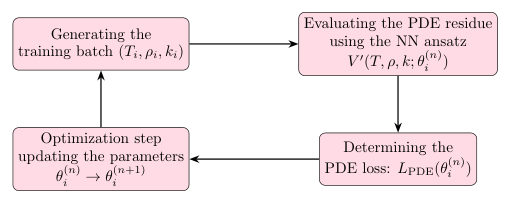
<figcaption class="paper-figure-caption"><b>Fig 2.</b> FIG. 2: Schematics of the PINN training. The cycle is repeated until convergence.</figcaption>
</figure>
<figure class="paper-figure-card">
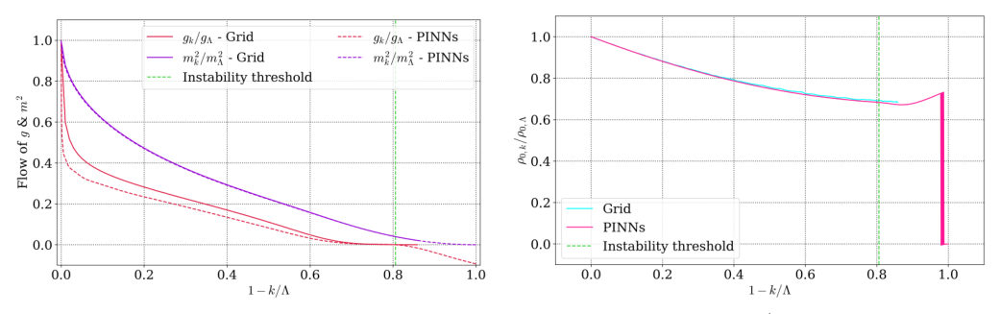
<figcaption class="paper-figure-caption"><b>Fig 3.</b> FIG. 3: Comparing the grid and the PINNs results for the T = 0 fixed temperature training. The results are obtained with P = 10, ε = 0.2, and the neural network had 4 hidden layers with 40 neurons each.</figcaption>
</figure>
<figure class="paper-figure-card">
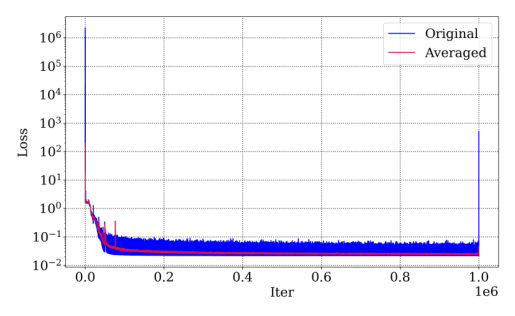
<figcaption class="paper-figure-caption"><b>Fig 4.</b> FIG. 4: The loss function throughout the T = 0 fixed temperature training.</figcaption>
</figure>
<figure class="paper-figure-card">
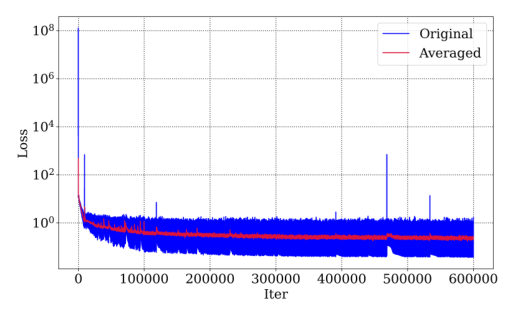
<figcaption class="paper-figure-caption"><b>Fig 5.</b> FIG. 5: The loss function throughout the varying temperature training.</figcaption>
</figure>
</div>

<p><strong>Summary.</strong> This paper introduces a novel Physics-Informed Neural Network (PINNs) technique to solve the functional renormalization group (FRG) flow equations for $O(N)$ field theories. By framing the problem as a neural network optimization, it overcomes the limitations of previous methods, such as reliance on the large-$N$ approximation or the computational scaling issues of traditional grid methods. The method successfully predicts the temperature dependence of the phase transition order parameter.</p>
<p><strong>Why it may be interesting.</strong> While focused on statistical mechanics, the successful application of PINNs to solve complex, non-linear differential equations governing phase transitions provides a powerful, generalizable computational tool applicable to many quantum many-body systems.</p>
<details>
<summary>Detailed structure</summary>
<p><strong>Main problem.</strong> The paper addresses the challenge of developing a generalizable and accurate numerical method to solve the functional renormalization group (FRG) flow equations for effective potentials.</p>
<p><strong>Main result.</strong> The proposed Physics-Informed Neural Network (PINNs) approach successfully learns the temperature, field, and scale dependencies of the effective potential, matching grid-based results for the order parameter curve.</p>
<p><strong>Method.</strong> It employs a PINNs framework, formulating the PDE as an optimization problem by minimizing the PDE residue, which avoids the limitations of traditional grid-based discretization schemes.</p>
<p><strong>Model / system.</strong> The study focuses on the $O(N)$ symmetric scalar field theory, analyzing its finite temperature phase transition using the Local Potential Approximation (LPA) for the Wetterich flow equation.</p>
<p><strong>Key observables.</strong> The flow of the effective potential $V_k(
ho)$, the order parameter $
ho_{0,k=0}(T)$, and the PDE residue heatmap.</p>
<p><strong>Important parameters / regimes.</strong> The number of components $N$, spatial dimension $d$, renormalization group scale $k$, and inverse temperature $eta=1/T$.</p>
<p><strong>Assumptions / limitations.</strong> The primary assumption is that the solution can be accurately represented by a structured ansatz combined with a neural network, circumventing the need for large-$N$ approximations or dense grid sampling.</p>
<p><strong>Figures summary.</strong> Figures compare the PINNs prediction for the order parameter vs. temperature curve against grid methods, showing convergence as the network size increases, and display PDE residue heatmaps to validate training quality.</p>
<p><strong>Paper structure.</strong> The paper introduces the FRG framework and the limitations of prior methods; it then details the PINNs formulation, comparing it against grid-based Runge-Kutta results, and finally demonstrates the method's success by showing temperature-dependent generalization.</p>
</details>
<details>
<summary>Abstract</summary>
<p>A novel physics-informed neural networks (PINNs) based approach for solving functional renormalization group flow equations is presented. We investigate the finite temperature phase transition in $O(N)$ models without relying on the large-$N$ approximation, which was used in earlier attempts with similar methods. We argue that these previous solutions cannot easily be generalized for more complex symmetries, and hence our approach can provide new insight. Our technique relies on a series of ansätze that combines the small- and large-field approximation schemes with a neural network, leading to a highly accurate approximation over the entire field range. We compare the PINNs approach with traditional grid-based Runge-Kutta results and show that the network can successfully learn the temperature, field, and scale dependencies of the effective potential in the local potential approximation.</p>
</details>
<p><sub><a href="#top">↑ back to top</a></sub></p>

<p><a id="paper-2610.12844"></a></p>
<h3 id="improved-classical-optimization-of-fermionic-hamiltonians-beyond-gaussian-states"><a href="http://arxiv.org/abs/2610.12844v1">Improved classical optimization of fermionic Hamiltonians beyond Gaussian states</a></h3>
<p><strong>Authors:</strong> Ojas Parekh<br>
<strong>Type:</strong> theory · <strong>Category:</strong> strongly correlated electrons · <strong>PDF:</strong> <a href="https://arxiv.org/pdf/2610.12844v1">https://arxiv.org/pdf/2610.12844v1</a><br>
<strong>Analysis basis:</strong> full PDF text, analyzed in chunks
<strong>Topic relevance:</strong> <code>Keldysh / 2PI / non-Gaussian methods</code> <strong>2/5</strong> · <code>analog quantum simulation</code> <strong>2/5</strong></p>
<div class="figure-strip-hint">↔ Scroll figures horizontally</div>
<div class="paper-figures-scroll">
<figure class="paper-figure-card">
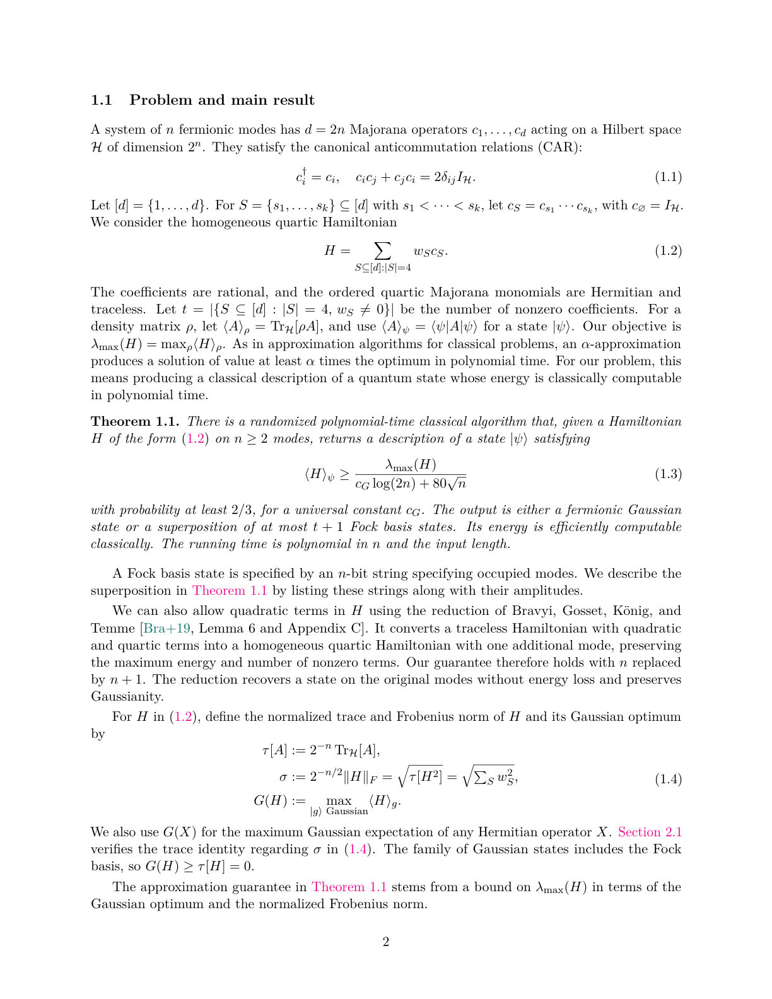
<figcaption class="paper-figure-caption"><b>Fig 1.</b> Low-resolution page preview, page 2</figcaption>
</figure>
<figure class="paper-figure-card">
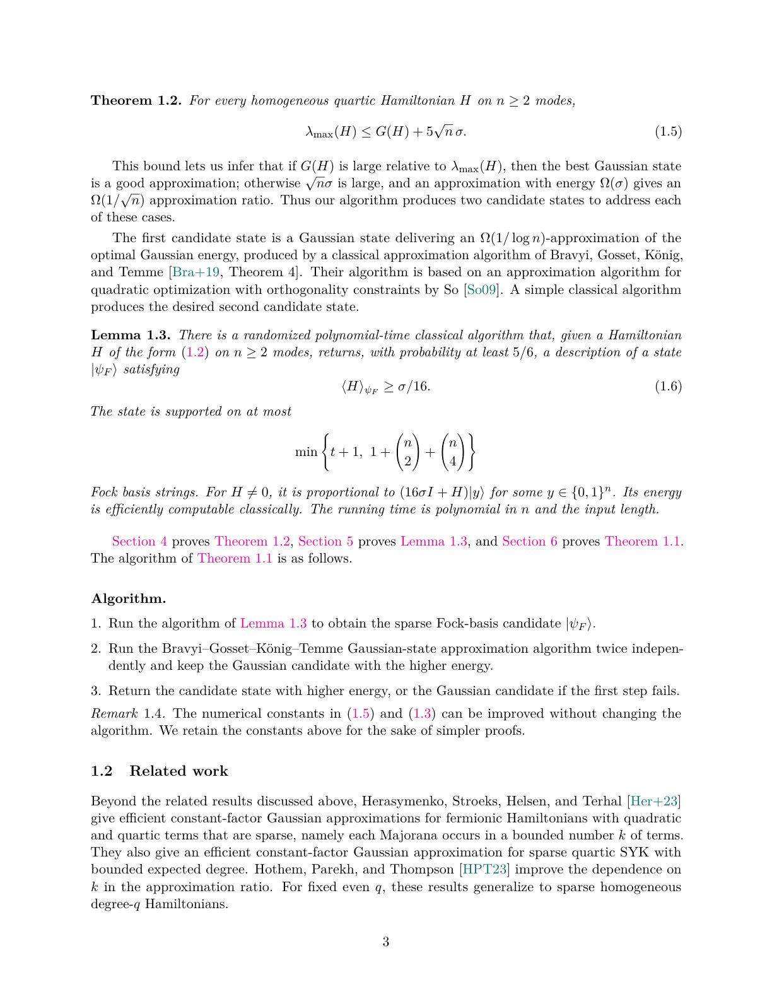
<figcaption class="paper-figure-caption"><b>Fig 2.</b> Low-resolution page preview, page 3</figcaption>
</figure>
<figure class="paper-figure-card">
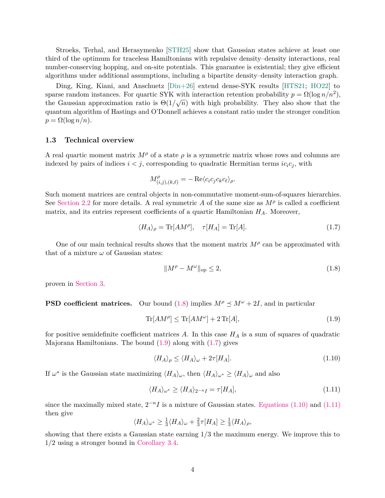
<figcaption class="paper-figure-caption"><b>Fig 3.</b> Low-resolution page preview, page 4</figcaption>
</figure>
<figure class="paper-figure-card">
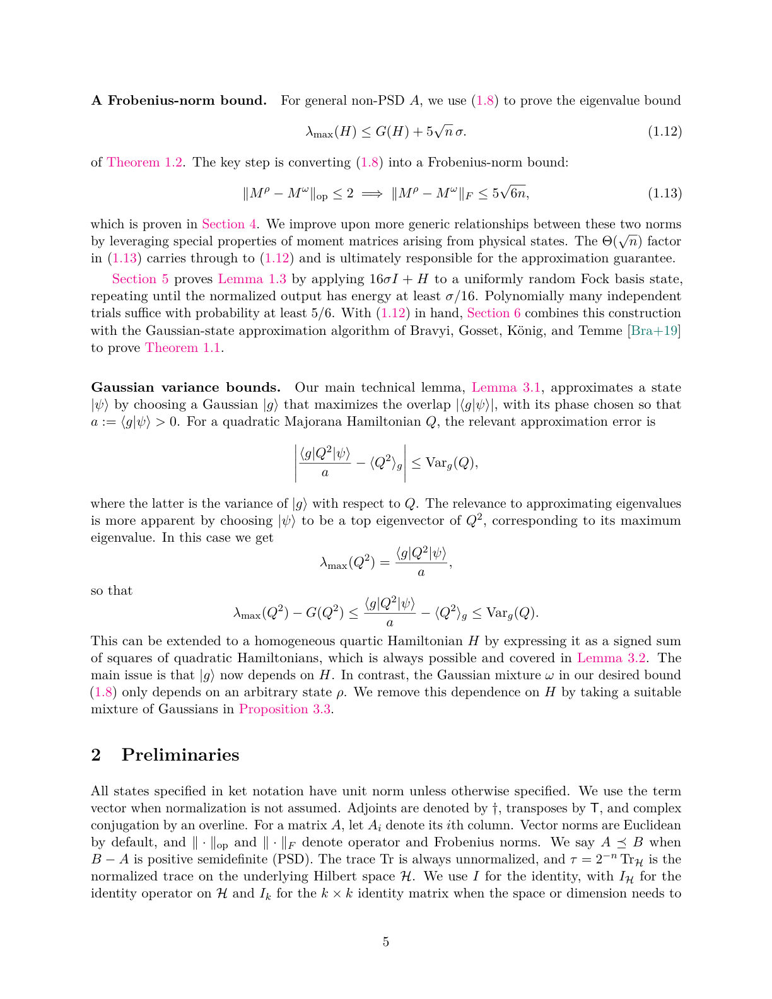
<figcaption class="paper-figure-caption"><b>Fig 4.</b> Low-resolution page preview, page 5</figcaption>
</figure>
<figure class="paper-figure-card">
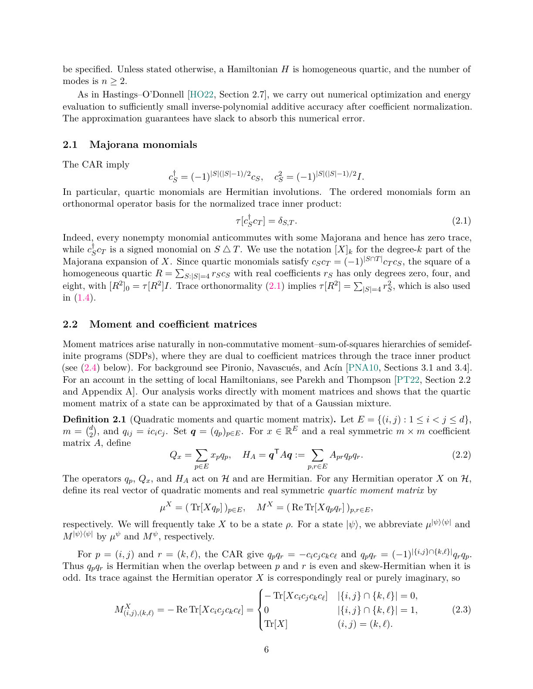
<figcaption class="paper-figure-caption"><b>Fig 5.</b> Low-resolution page preview, page 6</figcaption>
</figure>
</div>

<p><strong>Summary.</strong> This paper develops a polynomial-time classical algorithm to approximate the largest eigenvalue of a quartic fermionic Hamiltonian. It achieves this by establishing a rigorous upper bound that combines Gaussian expectations with sparse Fock-basis expectations. This improves the state-of-the-art approximation ratio for finding ground state energies in complex fermionic systems.</p>
<p><strong>Why it may be interesting.</strong> The techniques developed—using moment matrix bounds and combining different state representations (Gaussian vs. sparse)—are highly relevant for optimizing ground state energies in strongly correlated fermionic models where exact diagonalization is intractable.</p>
<details>
<summary>Detailed structure</summary>
<p><strong>Main problem.</strong> The paper addresses the challenge of finding the largest eigenvalue ($\lambda_{\max}$) of a complex, traceless quartic fermionic Hamiltonian ($H$) in polynomial time.</p>
<p><strong>Main result.</strong> It presents a randomized classical algorithm that approximates $\lambda_{\max}(H)$ with an error bounded by $O(1/\sqrt{n})$, significantly improving upon previous bounds.</p>
<p><strong>Method.</strong> The approach combines two candidate states—a Gaussian state and a sparse Fock-basis state—by leveraging a key eigenvalue bound ($\lambda_{\max}(H) \le G(H) + 5\sqrt{n} \sigma$).</p>
<p><strong>Model / system.</strong> The system is an $n$-mode fermionic system described by a homogeneous quartic Hamiltonian $H$, involving Majorana operators. The analysis heavily relies on moment matrices and properties derived from Gaussian states.</p>
<p><strong>Key observables.</strong> The largest eigenvalue $\lambda_{\max}(H)$ of the Hamiltonian, and the expectation values $\langle H 
angle_{\psi}$ for candidate states $|\psi
angle$.</p>
<p><strong>Important parameters / regimes.</strong> The system size $n$, the normalized Frobenius norm $\sigma$, and the approximation error factors like $c_G \log(2n)$ and $\sqrt{n}$.</p>
<p><strong>Assumptions / limitations.</strong> The analysis assumes the applicability of moment matrix techniques and relies on bounding the difference between moment matrices of different states.</p>
<p><strong>Paper structure.</strong> The paper builds upon establishing a crucial eigenvalue bound ($\lambda_{\max}(H) \le G(H) + 5\sqrt{n} \sigma$) by analyzing moment matrices, and then constructs a randomized algorithm that tests the two candidate states (Gaussian vs. sparse Fock-basis) derived from this bound.</p>
</details>
<details>
<summary>Abstract</summary>
<p>We give a polynomial-time randomized classical algorithm that approximates the largest eigenvalue $λ_{\max}$ of a traceless quartic fermionic Hamiltonian $H$ on $n$ modes. The algorithm achieves energy at least $λ_{\max}/O(\sqrt n)$ and outputs either a fermionic Gaussian state or a polynomially sparse state in the Fock basis. This is achieved through a new upper bound on $λ_{\max}$ in terms of the maximum energy of a Gaussian state and $\sqrt{2^{-n}\operatorname{Tr}(H^2)}$.</p>
</details>
<p><sub><a href="#top">↑ back to top</a></sub></p>

<p><a id="paper-2610.12653"></a></p>
<h3 id="tropical-qft-and-the-sine-gordon-model"><a href="http://arxiv.org/abs/2610.12653v1">Tropical QFT and the sine-Gordon model</a></h3>
<p><strong>Authors:</strong> Michael Borinsky, Jury Radkovski, Suriyah Rajalingam Kannagi<br>
<strong>Type:</strong> theory · <strong>Category:</strong> statistical mechanics · <strong>PDF:</strong> <a href="https://arxiv.org/pdf/2610.12653v1">https://arxiv.org/pdf/2610.12653v1</a><br>
<strong>Analysis basis:</strong> full PDF text, analyzed in chunks
<strong>Topic relevance:</strong> <code>Keldysh / 2PI / non-Gaussian methods</code> <strong>2/5</strong> · <code>analog quantum simulation</code> <strong>1/5</strong> · <code>non-equilibrium universality</code> <strong>1/5</strong></p>
<div class="figure-strip-hint">↔ Scroll figures horizontally</div>
<div class="paper-figures-scroll">
<figure class="paper-figure-card">
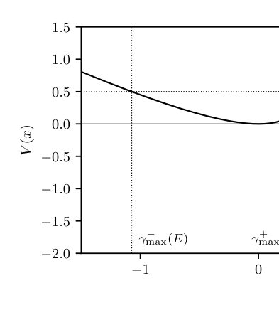
<figcaption class="paper-figure-caption"><b>Fig 1.</b> Figure 1: The potential V (x) = −x −1</figcaption>
</figure>
<figure class="paper-figure-card">
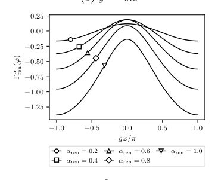
<figcaption class="paper-figure-caption"><b>Fig 2.</b> Figure 2: Plots of the effective action Γtr ren(φ) at couplings g2 and αren obtained using the convergent αren expansion (77).</figcaption>
</figure>
<figure class="paper-figure-card">
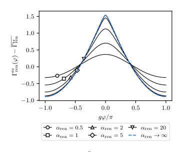
<figcaption class="paper-figure-caption"><b>Fig 3.</b> Figure 3: Plots of the shifted effective action Γtr ren(φ) −Γtr ren at couplings g2 and αren obtained using the numerical integration of the Ansatz (87). The blue dashed line depicts the scale- invariant solution computed using (30).</figcaption>
</figure>
<figure class="paper-figure-card">
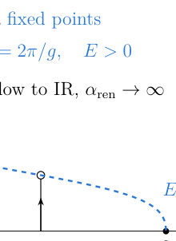
<figcaption class="paper-figure-caption"><b>Fig 4.</b> Figure 4: Schematic view of the tropical sine-Gordon RG flow. The x-axis shows values of 0 &lt; g2 &lt; 2 parameterizing the bare sine-Gordon Lagrangians. The y-axis schematically represents the effective actions at different scales, given by different values of αren. Black arrows schematically indicate the RG flow with increasing αren at fixed g2. The blue dashed curve is the limit αren →∞.</figcaption>
</figure>
<figure class="paper-figure-card">
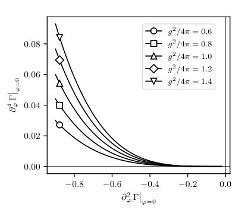
<figcaption class="paper-figure-caption"><b>Fig 5.</b> Figure 5: Fourth versus second φ-derivative of the effective action at φ = 0 evaluated at x = 0 in undeformed sine-Gordon theory (recall that φ is a function of the position x before tropical- ization). By construction, the graphs are scheme independent.</figcaption>
</figure>
</div>

<p><strong>Summary.</strong> This work develops the framework of Tropical Quantum Field Theory, treating it as an exactly solvable limit of standard QFTs. Using the sine-Gordon model as a test case, the authors show that the theory's renormalization group flow is completely characterized by its infrared fixed points. The methodology connects quantum field theory calculations to classical integrable systems via the Hamilton-Jacobi equation.</p>
<p><strong>Why it may be interesting.</strong> While focused on QFT, the use of RG flow, fixed points, and the connection to classical integrable systems (like the sine-Gordon model) provides powerful mathematical tools applicable to analyzing critical phenomena and phase transitions in condensed matter systems.</p>
<details>
<summary>Detailed structure</summary>
<p><strong>Main problem.</strong> The paper investigates Tropical Quantum Field Theory (Tropical QFT) as an exactly solvable deformation limit of ordinary QFTs.</p>
<p><strong>Main result.</strong> It demonstrates that all scale-invariant tropical QFTs with periodic effective actions in 2D are the infrared fixed points of a flow originating from sine-Gordon Lagrangians.</p>
<p><strong>Method.</strong> The analysis employs functional renormalization group methods and studies the tropical loop equation, relating large-order loop expansion behavior to the Hamilton-Jacobi equation.</p>
<p><strong>Model / system.</strong> The primary testbench model is the two-dimensional sine-Gordon theory, analyzed through its tropical deformation limit ($\xi 	o 0^+$) applied to a general scalar QFT potential.</p>
<p><strong>Key observables.</strong> The $eta$-functions, the tropical effective action ($\Gamma_{	ext{tr}}$), and the action computed via the Hamilton-Jacobi equation (tropical instantons).</p>
<p><strong>Important parameters / regimes.</strong> The deformation parameter $\xi$, the coupling constants ($\lambda_k$), and the dimension $D$ (especially $D=2$).</p>
<p><strong>Assumptions / limitations.</strong> The relationship between the Borel singularity in the large-loop expansion and the classical action (tropical instantons) is noted as heuristic.</p>
<p><strong>Figures summary.</strong> Figure 6 illustrates the surface $\Sigma$ and two trajectories (red and green) in the context of the tropical sine-Gordon model, with the red trajectory yielding the relevant action value.</p>
<p><strong>Paper structure.</strong> The paper progresses by defining Tropical QFT via the $\xi 	o 0^+$ limit, deriving the governing tropical loop equation, applying RG methods to solve the model analytically and numerically, and finally connecting the large-order behavior to classical Hamilton-Jacobi dynamics.</p>
</details>
<details>
<summary>Abstract</summary>
<p>A tropical quantum field theory is an exactly solvable deformation limit of an ordinary QFT, governed by a non-linear partial differential equation. We use the integrable two-dimensional sine-Gordon theory as a testbench to compare the exact features of an undeformed model with its tropical counterpart. We classify scale-invariant tropical QFTs in $D=2$ and leverage functional renormalization group methods to demonstrate that all scale-invariant theories with periodic effective actions are infrared fixed points of flows originating from sine-Gordon Lagrangians. For the tropical sine-Gordon model, we compute the $β$-functions exactly, solve the renormalized theory both via a convergent expansion and numerically for all admissible couplings, and illustrate the complete renormalization group flow from the Gaussian to the IR fixed point. Finally, we study the large-order behaviour of the loop expansion and relate it to the Hamilton-Jacobi equation, whose solutions we interpret as tropical instantons.</p>
</details>
<p><sub><a href="#top">↑ back to top</a></sub></p>

<p><a id="paper-2610.13579"></a></p>
<h3 id="correlation-based-measurement-of-entanglement-in-rank-2-mixed-states"><a href="http://arxiv.org/abs/2610.13579v1">Correlation-Based Measurement of Entanglement in Rank-2 Mixed States</a></h3>
<p><strong>Authors:</strong> M. I. Samar, V. M. Tkachuk<br>
<strong>Type:</strong> both · <strong>Category:</strong> quantum information and computing · <strong>PDF:</strong> <a href="https://arxiv.org/pdf/2610.13579v1">https://arxiv.org/pdf/2610.13579v1</a><br>
<strong>Analysis basis:</strong> full PDF text, analyzed in chunks
<strong>Topic relevance:</strong> <code>quantum measurements</code> <strong>2/5</strong> · <code>QC/QI experiment</code> <strong>1/5</strong></p>
<div class="figure-strip-hint">↔ Scroll figures horizontally</div>
<div class="paper-figures-scroll">
<figure class="paper-figure-card">

<figcaption class="paper-figure-caption"><b>Fig 1.</b> Figure 1: Unified circuit for preparation and measurement of the two-qubit logical states. The binary parameters l, m ∈{0, 1} select Case I (l = 0, m = 1), Case II (l = 1, m = 1), or Case III (l = 1, m = 0). The rotation Rc ∈{I, Rx(π/2), Ry(−π/2)} selects the measurement basis.</figcaption>
</figure>
<figure class="paper-figure-card">

<figcaption class="paper-figure-caption"><b>Fig 2.</b> Figure 2: Reconstructed concurrence C(ρ) as a function of the mixing parameter p for θ ∈{π/6, π/4, π/3, π/2}. Lines show the exact results, while filled symbols represent noisy simulations using the FakeKingston backend model. Different line styles and marker shapes correspond to different values of θ.</figcaption>
</figure>
<figure class="paper-figure-card">

<figcaption class="paper-figure-caption"><b>Fig 3.</b> Figure 3: Schematic N-qubit state-preparation and measurement circuit. The first qubit is prepared by U(ai, bi) and entangled with the remaining qubits of subsystem A by CNOT gates. The qubits of subsystem B are prepared by U(θj, ϕj) and coupled to the first qubit through controlled-Z gates. For the measurement of Rx, Rc = Ry(−π/2), while for Ry, Rc = Rx(π/2). The remaining qubits of subsystem A are rotated by Ry(−π/2), and the qubits of subsystem B are measured directly in the computational basis.</figcaption>
</figure>
<figure class="paper-figure-card">

<figcaption class="paper-figure-caption"><b>Fig 4.</b> Figure 4: Concurrence C(ρ) as a function of p for uniform and mixed angle configurations. Lines show the exact results and filled symbols the error-mitigated FakeKingston simulations. For N = 5, readout mitigation is used, whereas for N = 10 it is supplemented by linear ZNE.</figcaption>
</figure>
<figure class="paper-figure-card">

<figcaption class="paper-figure-caption"><b>Fig 5.</b> Figure 5: Representative comparison of the exact, raw, and mitigated concurrence. For N = 5, only readout mitigation is applied, while for N = 10 linear ZNE is additionally included.</figcaption>
</figure>
</div>

<p><strong>Summary.</strong> This paper develops a correlation-based method to estimate entanglement (concurrence) in mixed quantum states by restricting the analysis to rank-2 states. It derives analytical formulas for both two- and multi-qubit systems using only measurements of Pauli correlations. The results are validated against noisy simulations, demonstrating a robust protocol for entanglement estimation with minimal experimental overhead.</p>
<p><strong>Why it may be interesting.</strong> This work provides a highly practical, resource-efficient protocol for entanglement verification, which is crucial for assessing quantum hardware performance and validating quantum information protocols.</p>
<details>
<summary>Detailed structure</summary>
<p><strong>Main problem.</strong> The paper addresses the challenge of accurately quantifying entanglement in mixed quantum states, specifically focusing on rank-2 mixed states in multi-qubit systems.</p>
<p><strong>Main result.</strong> They derive closed-form, correlation-based expressions for concurrence and generalized concurrence for these states, which can be estimated using only a small number of Pauli correlation measurements.</p>
<p><strong>Method.</strong> The method leverages the structure of rank-2 states, mapping the problem onto a logical qubit description whose Pauli operators admit factorizable physical realizations. Entanglement is then calculated using measurable Pauli expectation values.</p>
<p><strong>Model / system.</strong> The study concerns two- and multi-qubit systems, focusing on states $
ho$ that are restricted to a rank-2 subspace embedded in a logical two-dimensional subspace ($\mathcal{H}_L$).</p>
<p><strong>Key observables.</strong> Concurrence ($C(
ho)$) and generalized concurrence across $N$-qubit bipartitions.</p>
<p><strong>Important parameters / regimes.</strong> The mixing parameter $p$ defining the rank-2 state, and the angles ($   heta_j$) characterizing the logical Pauli operators.</p>
<p><strong>Assumptions / limitations.</strong> The analysis is restricted to rank-2 mixed states, and the derivation relies on the assumption that the logical Pauli operators have factorizable physical realizations.</p>
<p><strong>Figures summary.</strong> Figures illustrate the unified circuits for state preparation and measurement, showing reconstructed concurrence versus the mixing parameter $p$ for both two-qubit and $N$-qubit systems, comparing exact theory to noisy simulation results.</p>
<p><strong>Paper structure.</strong> The paper proceeds by establishing the theoretical framework for rank-2 states and their logical encoding. It then derives the analytical formulas for concurrence in the two-qubit and general $N$-qubit cases, followed by validation through noisy simulations using error mitigation techniques.</p>
</details>
<details>
<summary>Abstract</summary>
<p>We study correlation-based entanglement evaluation in rank-2 mixed states of two- and multi-qubit systems. The relevant two-dimensional subspace is treated as a logical qubit embedded in the physical Hilbert space, and factorizable realizations of its logical Pauli operators are classified. For two qubits, this yields nontrivial canonical encodings related by local Clifford transformations. The relation between logical and physical Bloch vectors admits a geometric interpretation as a transversely deformed Bloch sphere, leading to closed-form expressions for two-qubit concurrence and generalized concurrence across $N$-qubit bipartitions. The entanglement scaling factor is obtained directly from complementary-subsystem correlations, without prior calibration of state-preparation parameters. Noisy simulations using the IBM Quantum FakeKingston backend model, with readout-error mitigation and zero-noise extrapolation, confirm the analytical results up to $N=10$ qubits. The protocol therefore enables entanglement estimation from only a small number of measurement settings for this class of rank-2 logical states.</p>
</details>
<p><sub><a href="#top">↑ back to top</a></sub></p>

<p><a id="paper-2610.12597"></a></p>
<h3 id="error-correction-and-quantum-information-spreading-on-sparse-random-graphs"><a href="http://arxiv.org/abs/2610.12597v1">Error correction and quantum information spreading on sparse random graphs</a></h3>
<p><strong>Authors:</strong> Giovanni Cemin, Marin Bukov, Andrea Solfanelli<br>
<strong>Type:</strong> theory · <strong>Category:</strong> quantum information and computing · <strong>PDF:</strong> <a href="https://arxiv.org/pdf/2610.12597v1">https://arxiv.org/pdf/2610.12597v1</a><br>
<strong>Analysis basis:</strong> full PDF text, analyzed in chunks
<strong>Topic relevance:</strong> <code>analog quantum simulation</code> <strong>2/5</strong></p>
<div class="figure-strip-hint">↔ Scroll figures horizontally</div>
<div class="paper-figures-scroll">
<figure class="paper-figure-card">

<figcaption class="paper-figure-caption"><b>Fig 1.</b> FIG. 1. (a) Schematic of a Floquet random circuit on 𝑁qubits living on a graph, generated by the stroboscopic application of 𝑈. The unitary 𝑈is built by placing a two-qubit gate on every edge, non- blocking (NB, green solid line) with probability 1 −𝑝and blocking (B, red dashed line) with probability 𝑝. (b) Sample realizations of the long-range (LR) and power-of-two (PWR2) graphs embedded in 1D. Each pair of sites (𝑖, 𝑗) is connected with probability 𝑝𝑖𝑗∝𝑟−𝛼, where 𝑟:= |𝑖−𝑗| is the distance between sites 𝑖and 𝑗; for PWR2, 𝑟is restricted to powers of 2. (c) The two gate types: the non- blocking (NB) gate spreads information across the edge it acts on, while the blocking (B) gate hosts a...</figcaption>
</figure>
<figure class="paper-figure-card">

<figcaption class="paper-figure-caption"><b>Fig 2.</b> FIG. 2. Cutting probability 𝑃cut(𝑖) across the threshold spectral di- mension. Exact evaluation of Eqs. (C1) and (C7) at 𝑝= 0.5, for the long-range (solid) and power-of-two (dashed) graphs at matched spectral dimension. The black line marks the critical value 𝑑∗ 𝑠= 2. For 𝑑𝑠&gt; 𝑑∗ 𝑠, the cutting probability vanishes as a stretched exponen- tial; for 𝑑𝑠&lt; 𝑑∗ 𝑠it saturates at a finite value and absolute cuts survive in the thermodynamic limit. Two microscopically different graph families with the same spectral dimension share the same exponent, differing only by a prefactor. Inset: an absolute cut at site 𝑖requires every bond crossing it to carry a blocking gate.</figcaption>
</figure>
<figure class="paper-figure-card">

<figcaption class="paper-figure-caption"><b>Fig 3.</b> FIG. 3. Spectral dimension governs the criticality of Floquet Clifford circuits on random graphs. (a) Finite-size scaling collapse of the second-moment ratio 𝑄= ⟨𝐼⟩2/⟨𝐼2⟩of the quantum conditional mutual information 𝐼(𝐴: 𝐶| 𝐵), for the tripartition shown in the inset (|𝐴| = |𝐵| = |𝐶| = 𝑁/4), at 𝛼= 1.95 (𝑑𝑠= 40/19). Top: raw 𝑄versus blocking probability 𝑝for system sizes 𝑁= 128–2048. Bottom: corrected ratio 𝑄−𝑁−𝜔𝐺collapsed against the scaling variable 𝑥of Eq. (20). (b) Top: critical blocking probability 𝑝𝑐versus spectral dimension 𝑑𝑠for long-range and PWR2 graphs; the star marks the theoretical value 𝑝𝑐= 0 at the threshold spectral dimension 𝑑∗ 𝑠= 2. The shaded regions mark the volume-law...</figcaption>
</figure>
<figure class="paper-figure-card">

<figcaption class="paper-figure-caption"><b>Fig 4.</b> FIG. 4. CSS codes from Floquet Clifford circuits. (a) The circuit as an encoder: a single data qubit |𝜓⟩and 𝑁−1 ancillas |0⟩are evolved by 𝑈𝑡, defining an [[𝑁, 1, D]] CSS code whose distance splits into two sectors, D = min(𝑑𝑋, 𝑑𝑍). (b) Representative realization of the non-blocking cluster on the ring (gray). The logical ¯𝑍is a cycle winding once around the ring, of length 𝑑𝑍(red); the logical ¯𝑋is a set of sites severing every winding path, of size 𝑑𝑋(blue). (c) Mean code distance ⟨D⟩versus blocking probability 𝑝at fixed spectral dimension 𝑑𝑠= 10/3 (𝛼= 1.6 LR graph). The distance vanishes above the percolation threshold 𝑝𝑐≃0.67 (dotted) and grows with 𝑁below it. At finite 𝑁, it peaks at...</figcaption>
</figure>
<figure class="paper-figure-card">

<figcaption class="paper-figure-caption"><b>Fig 5.</b> FIG. 5. Blockade is a property of a site, not of an edge. Probability that the operator 𝑍1(𝑡), seeded at the leftmost edge of an 𝑁= 32 1D chain, acts nontrivially on site 𝑗after 𝑡periods of the brick-wall Floquet circuit. Each realization draws an independent random two- qubit Clifford with no single-site LIOM for every NB gate, while the B gate is fixed to CZ; the average is over 400 realizations. The color scale is logarithmic and starts at one realization; sites outside the support in every realization are left white. Below each plot, schematic zooms on seven sites around the dashed one show two Floquet periods, with NB gates (green) and B gates (red). Left: with only NB gates, the...</figcaption>
</figure>
</div>

<p><strong>Summary.</strong> This work establishes the spectral dimension ($d_s$) as the universal metric controlling quantum information dynamics on sparse random graphs. It shows that $d_s$ governs the transition between localized and ergodic entanglement regimes and optimizes the trade-off in quantum error-correcting code distance. This provides a crucial theoretical tool for designing robust quantum hardware based on engineered connectivity.</p>
<p><strong>Why it may be interesting.</strong> It provides a powerful, universal geometric diagnostic ($d_s$) to predict fundamental quantum properties (like error resilience) in complex, engineered quantum hardware architectures.</p>
<details>
<summary>Detailed structure</summary>
<p><strong>Main problem.</strong> The paper investigates how the underlying structure of an interaction graph dictates the dynamics of quantum information and the performance limits of quantum error-correcting codes (QEC) on non-Euclidean geometries.</p>
<p><strong>Main result.</strong> The spectral dimension ($d_s$) of the graph is identified as the universal parameter governing both quantum information spreading (area-law vs. volume-law entanglement) and the scaling of the QEC code distance.</p>
<p><strong>Method.</strong> The analysis uses Floquet random Clifford circuits on sparse random graphs, relating spectral properties (via the graph Laplacian) to entanglement measures and code distance scaling.</p>
<p><strong>Model / system.</strong> The model involves quantum many-body systems whose interactions are defined by a sparse random graph. Dynamics are simulated using Floquet random Clifford circuits containing both blocking and non-blocking gates.</p>
<p><strong>Key observables.</strong> Spectral dimension ($d_s$), entanglement entropy scaling (area-law vs. volume-law), and the achievable code distance.</p>
<p><strong>Important parameters / regimes.</strong> The spectral dimension ($d_s$), which is determined by the graph's connectivity structure and the balance between competing error channels (graph cuts vs. winding cycles).</p>
<p><strong>Assumptions / limitations.</strong> The framework extends concepts from classical complex networks to non-equilibrium quantum dynamics, assuming implementability on platforms like neutral atoms.</p>
<p><strong>Figures summary.</strong> Figure 1 schematically illustrates the Floquet random circuit on the LR and PWR2 graphs. Other figures relate to the cutting probability $P_{cut}(i)$ and the spectral gap scaling.</p>
<p><strong>Paper structure.</strong> The paper establishes the problem by noting the limitations of Euclidean lattices, introduces $d_s$ as the key parameter, and then analyzes how $d_s$ controls the entanglement transition (percolation) and optimizes the trade-off in QEC code distance scaling.</p>
</details>
<details>
<summary>Abstract</summary>
<p>Quantum error-correcting codes on graph geometries beyond regular euclidean lattices have emerged as a promising route toward robust quantum information processing. A major challenge in quantum error correction is the trade-off between favorable properties of codes constructed in high dimensionality and the need for locality in practical implementations on near-term hardware. Sparse intermediate geometries may combine the advantages of both, but how their structure governs quantum information dynamics and code performance remains unclear. Here we show that the spectral dimension $d_s$, defined from the low-energy spectrum of the graph Laplacian, is the universal parameter connecting these properties. Using Floquet random Clifford circuits on two distinct sparse graph architectures with tunable spectral dimension, we find that $d_s$ governs both quantum information spreading and the scaling of the resulting quantum error-correcting code distance. We identify a geometry-induced entanglement phase transition from localized area-law to ergodic volume-law, whose universality is determined by $d_s$ and exhibits long-range percolation criticality. In the ergodic phase, the circuit acts as a CSS code encoder whose code distance is set by the competition between two logical sectors --- the cost of severing the graph and the length of its shortest winding cycle --- which connectivity pushes in opposite directions. The spectral dimension organizes this trade-off, highlighting a maximum at intermediate $d_s$ retaining sparse connectivity and physical realizability.</p>
</details>
<p><sub><a href="#top">↑ back to top</a></sub></p>

<p><a id="paper-2610.12840"></a></p>
<h3 id="ground-state-phase-diagram-of-the-effective-model-with-antiferromagnetic-nearest-neighbor-and-ferromagnetic-next-nearest-neighbor-interactions-in-11-periodic-approximants-to-icosahedral-quasicrystals"><a href="http://arxiv.org/abs/2610.12840v1">Ground-State Phase Diagram of the Effective Model with Antiferromagnetic Nearest-Neighbor and Ferromagnetic Next-Nearest-Neighbor Interactions in 1/1 Periodic Approximants to Icosahedral Quasicrystals</a></h3>
<p><strong>Authors:</strong> Shinji Watanabe<br>
<strong>Type:</strong> theory · <strong>Category:</strong> strongly correlated electrons · <strong>PDF:</strong> <a href="https://arxiv.org/pdf/2610.12840v1">https://arxiv.org/pdf/2610.12840v1</a><br>
<strong>Analysis basis:</strong> full PDF text, analyzed in chunks
<strong>Topic relevance:</strong> <code>analog quantum simulation</code> <strong>2/5</strong></p>
<div class="figure-strip-hint">↔ Scroll figures horizontally</div>
<div class="paper-figures-scroll">
<figure class="paper-figure-card">

<figcaption class="paper-figure-caption"><b>Fig 1.</b> Fig. 1. (Color online) Tsai-type cluster of Au-SM-Tb consists of (a) clus- ter center, (b) dodecahedron, (c) icosahedron, (d) icosidodecahedron and (e) defect rhombic triacontahedron with Au (yellow), SM (blue), and Tb (gray). The frame box denotes the (expanded) unit cell of the bcc lattice of the 1/1 AC Au-SM-Tb. (f) Local configuration of atoms surrounding the Tb atom in the Tsai-type cluster. The z axis is the pseudo 5-fold axis. The yz plane is the mirror plane. The angle θ is defined between the magnetic easy axis J for the CEF ground state and the pseudo 5-fold axis (z axis) within the mirror (yz) plane.</figcaption>
</figure>
<figure class="paper-figure-card">

<figcaption class="paper-figure-caption"><b>Fig 2.</b> Fig. 2. (Color online) The N.N. interactions J1 and the N.N.N. interactions J2 for (a) intra icosahedron and (b) inter icosahedron are depicted by solid lines and dashed lines, respectively. In (b), the unit cell of the bcc lattice of the 1/1 AC with the lattice constant a is denoted as a frame box.</figcaption>
</figure>
<figure class="paper-figure-card">

<figcaption class="paper-figure-caption"><b>Fig 3.</b> Fig. 3. (Color online) Unit normal vector ˆnijk (red arrow) of the triangular surface formed by the i, j, and k sites defined by the anticlockwise direction for (a) icosahedron and (b) inter icosahedrons. (c) Pentagonal pyramid com- posed of the apex and five basal vertices, which correspond to the vertex of the icosahedron and vertices of the outer icosahedrons, respectively.</figcaption>
</figure>
<figure class="paper-figure-card">

<figcaption class="paper-figure-caption"><b>Fig 4.</b> Fig. 5. (Color online) The non-collinear ferrimagnetic state for θ = 0◦de- noted by the black double-square symbol in Fig. 4. The framebox denotes the unit cell.</figcaption>
</figure>
<figure class="paper-figure-card">

<figcaption class="paper-figure-caption"><b>Fig 5.</b> Fig. 4. (Color online) The ground-state phase diagram in the plane of −J2/J1 for J1 &lt; 0 and J2 &gt; 0 and the anisotropy angle θ. (a) J1 = 0 (up- per panel) and 10−1 ≤−J2/J1 ≤102 in logarithmic plot (lower panel). (b) The enlargement for 0 ≤−J2/J1 ≤3. In (a) and (b), the colored regions de- note magnetic orders characterized by the topological charge |n| = 3 (blue), 1 (pink), and 0 (white). The open symbols denote FM orders and the filled sym- bols denote AFM orders. The vertical dashed lines at θ = 0◦, 90◦and 180◦are the guides for the eyes. The vertical dotted lines at θ = θc0 = 13.570◦, θc1 = 79.475◦, θc2 = 103.570◦and θc3 = 127.665◦and the vertical dash-dotted lines at θ = θ0 = 58.282◦and...</figcaption>
</figure>
</div>

<p><strong>Summary.</strong> This theoretical work maps the magnetic ground-state phase diagram for rare-earth magnetic systems modeled on icosahedral quasicrystal approximants. By analyzing the competition between antiferromagnetic and ferromagnetic interactions, the authors identify several stable non-collinear magnetic orders. The study is significant for linking crystal structure, magnetic interactions, and topological properties in complex materials.</p>
<p><strong>Why it may be interesting.</strong> The combination of geometric frustration (quasicrystals) with magnetic interactions and topological invariants provides a rich platform for understanding emergent quantum magnetic phenomena beyond simple lattice models.</p>
<details>
<summary>Detailed structure</summary>
<p><strong>Main problem.</strong> The study aims to determine the ground-state phase diagram of an effective magnetic model describing interactions in 1/1 periodic approximants to icosahedral quasicrystals.</p>
<p><strong>Main result.</strong> The research reveals that various non-collinear ferrimagnetic and antiferromagnetic orders are stabilized, with the specific ground state depending critically on the ratio of $J_2/J_1$ and the magnetic anisotropy angle $ heta$.</p>
<p><strong>Method.</strong> The authors used complete enumeration of magnetic moment configurations combined with topological analysis (calculating total chirality $\chi_T$ and topological charge $n$) to map the phase diagram.</p>
<p><strong>Model / system.</strong> The system is based on rare-earth-based 1/1 approximants to icosahedral quasicrystals. The effective Hamiltonian includes nearest-neighbor (AFM, $J_1$) and next-nearest-neighbor (FM, $J_2$) interactions, alongside magnetic anisotropy from the Crystal Electric Field (CEF).</p>
<p><strong>Key observables.</strong> Ground-state phase diagram, magnetic space groups ($ar{R}3$, $C2'/m'$, etc.), topological charge ($n$), and total chirality ($\chi_T$).</p>
<p><strong>Important parameters / regimes.</strong> The ratio $J_2/J_1$ and the magnetic anisotropy angle $   heta$ are the primary tuning parameters.</p>
<p><strong>Assumptions / limitations.</strong> The analysis relies on the effective model Hamiltonian and the assumption that ground states can be found via complete enumeration of magnetic configurations.</p>
<p><strong>Figures summary.</strong> Figures illustrate the Tsai-type cluster components, the geometry of N.N. and N.N.N. bonds, the main phase diagram mapping stable magnetic structures vs. $J_2/J_1$ and $    heta$, and the $    heta$ dependence of magnetic moments and chirality.</p>
<p><strong>Paper structure.</strong> The paper systematically analyzes the magnetic interactions (N.N. and N.N.N.) within the quasicrystal structure, calculates topological invariants, and maps out the resulting ground-state phase diagram based on interaction ratios and anisotropy.</p>
</details>
<details>
<summary>Abstract</summary>
<p>By performing complete enumeration of all configurations of magnetic moments, we have determined the ground-state phase diagram of the effective model with antiferromagnetic nearest-neighbor interactions $J_1$ and ferromagnetic next-nearest-neighbor interactions $J_2$ on the 1/1 periodic approximant to icosahedral quasicrystal. Depending on the ratio of $J_2/J_1$ and the magnetic anisotropy arising from the crystalline electric field, various non-collinear ferrimagnetic orders and antiferromagnetic orders are shown to be stabilized, whose magnetic space groups are identified as $R\bar{3}$, $C2'/m'$, $Pm'm'2$ and $I_{\rm P}m'\bar{3}'$. We have revealed the topological as well as magnetic property of each ground state with degeneracy, which is useful to understand experimental observations of magnetic structures and domains in the rare-earth-based 1/1 approximants.</p>
</details>
<p><sub><a href="#top">↑ back to top</a></sub></p>

<p><a id="paper-2610.12573"></a></p>
<h3 id="odd-parity-surface-magnetism-in-a-kondo-insulator"><a href="http://arxiv.org/abs/2610.12573v1">Odd-parity surface magnetism in a Kondo insulator</a></h3>
<p><strong>Authors:</strong> Maxim Dzero, Brian M. Andersen<br>
<strong>Type:</strong> theory · <strong>Category:</strong> strongly correlated electrons · <strong>PDF:</strong> <a href="https://arxiv.org/pdf/2610.12573v1">https://arxiv.org/pdf/2610.12573v1</a><br>
<strong>Analysis basis:</strong> full PDF text, analyzed in chunks
<strong>Topic relevance:</strong> <code>Keldysh / 2PI / non-Gaussian methods</code> <strong>2/5</strong></p>
<div class="figure-strip-hint">↔ Scroll figures horizontally</div>
<div class="paper-figures-scroll">
<figure class="paper-figure-card">

<figcaption class="paper-figure-caption"><b>Fig 1.</b> FIG. 2. Surface spectral function of the nonmagnetic apex of (001) SmB6 tip, A00(k∥, ω), along ¯Γ– ¯ X– ¯ M–Y –¯Γ of the sur- face Brillouin zone shown using the logarithmic color scale, in units of eV−1. Energies are measured from the Fermi level EF = −6.35 meV (dotted line), fixed by charge neu- trality of the bulk. Dashed lines are the edges of the pro- jected valence and conduction bulk bands, maxkz Ev(k∥, kz) and minkz Ec(k∥, kz) correspondingly. Parameters of ˆHbulk: td = −2 eV, tf = 0.05 eV, ηd = −0.3, ηf = −0.29, V = 36.5 meV, with ϵd and ϵf chosen so that the d and f levels at Γ lie at 0.2 eV and −10 meV (ϵd = 4.4 eV, ϵf = −116.5 meV). The band-bending potential is U(j) = U0e−j/λB...</figcaption>
</figure>
<figure class="paper-figure-card">

<figcaption class="paper-figure-caption"><b>Fig 2.</b> FIG. 3. Largest eigenvalue λmax of the linearized self- consistency kernel ˆU 1/2 ˆχ ˆU 1/2, Eq. (32), with ˆU = diag(Udf, Iff) and ˆχab(j, j′) the static layer susceptibility in the { ˆO∆, ˆOM} channel, as a function of the two couplings Udf and Iff, Eq. (29), at T = 10 K. The thick black line λmax = 1 separates the normal (time-reversal-symmetric) surface from the time-reversal-symmetry-broken (TRSB) one. Thin grey lines are iso-contours of λmax, and the dashed lines mark the single-channel thresholds U c df = 118 meV (at Iff = 0) and Ic ff = 49 meV (at Udf = 0). Model parameters used to gen- erate this plot are: td = −2, tf = 0.05, V = 0.0365 eV, ηd = −0.3, ηf = −0.29, εd = 4.4 eV, εf =...</figcaption>
</figure>
<figure class="paper-figure-card">

<figcaption class="paper-figure-caption"><b>Fig 3.</b> FIG. 5. Temperature dependence of the order parameters ∆j=0 and exchange field hj=0 on the apex extracted from the solution of the self-consistency equations (31). The parame- ters used to generate this plot are the same as those used for Fig. 4.</figcaption>
</figure>
<figure class="paper-figure-card">

<figcaption class="paper-figure-caption"><b>Fig 4.</b> FIG. 4. Self-consistent layer profiles of the two compo- nents of the surface order parameter at Udf = 116.8 meV, Iff = 20 meV (a point on the Tc = 10 K line of Fig. 3): the odd-parity hybridization amplitude ∆j (main panel) and the f-shell Weiss exchange field hj (inset) for T = 1.2, 5.2 and 8.7 K, j = 0 being the apex layer. The profiles are obtained by iterating Eqs. (31) to convergence on N = 18 explicit lay- ers coupled to the nonmagnetic semi-infinite bulk, with the same model parameters, band-bending potential and k∥mesh as in Fig. 3 above. Notably, the exchange field hj is con- fined to the first three to four layers, whereas ∆j decays over the whole explicit region, reflecting the...</figcaption>
</figure>
<figure class="paper-figure-card">

<figcaption class="paper-figure-caption"><b>Fig 5.</b> FIG. 6. Spin polarization of the apex, ρspin/ρt, at T = 5.2 K, computed with the self-consistent fields ∆j and hj at this temperature and with equal tunneling amplitudes, td = tf. Both ρspin and ρt are convolved with −∂f/∂ω at the same temperature. The spectra are obtained with γ = 0.15 meV on the same N = 18 layers and k∥mesh as in Fig. 4.</figcaption>
</figure>
</div>

<p><strong>Summary.</strong> This paper develops a theoretical framework to explain magnetic contrast observed in tunneling spectroscopy of Kondo insulators. It shows that the required sign change in conductance necessitates the breaking of time-reversal symmetry at the surface. This symmetry breaking is linked to the condensation of an odd-parity order parameter, providing a unique spectroscopic fingerprint of magnetism driven by electronic correlations.</p>
<p><strong>Why it may be interesting.</strong> The mechanism relies on the interplay between topological surface states, symmetry breaking (TRSB), and strong electronic correlations ($d-f$ hybridization), which are central themes in advanced condensed matter theory.</p>
<details>
<summary>Detailed structure</summary>
<p><strong>Main problem.</strong> To theoretically explain the experimentally observed sign change in the tunneling conductance (magnetic contrast) when the bias voltage is reversed in a Kondo insulator junction.</p>
<p><strong>Main result.</strong> The sign change is a spectroscopic signature of Time-Reversal Symmetry Breaking (TRSB) on the $    ext{SmB}_6$ surface, driven by the condensation of a time-reversal-odd order parameter ($\Delta P_T$).</p>
<p><strong>Method.</strong> The authors use a mean-field theory applied to the surface electronic structure, analyzing the spectral function and tunneling current using time-reversal symmetry decomposition.</p>
<p><strong>Model / system.</strong> The system involves a topological Kondo insulator ($    ext{SmB}<em 1_x="1+x">6$) nanowire tip tunneling into a bi-collinear antiferromagnet ($   ext{Fe}</em>$). The theory models the interaction between conduction $d$- and localized $f$-electrons.}   ext{Te</p>
<p><strong>Key observables.</strong> Tunneling conductance, which exhibits a sign change near zero bias voltage ($\delta I_{	ext{odd}}$).</p>
<p><strong>Important parameters / regimes.</strong> Transition temperature $T_c \approx 10 	ext{ K}$; the time-reversal-odd hybridization amplitude $\Delta P_T$.</p>
<p><strong>Assumptions / limitations.</strong> The analysis assumes the substrate magnetic pattern is perfectly commensurate and collinear, and the tunneling process is treated perturbatively.</p>
<p><strong>Figures summary.</strong> Not specified.</p>
<p><strong>Paper structure.</strong> The paper establishes the necessity of TRSB to explain the magnetic contrast, develops a mean-field theory for the $   ext{SmB}_6$ surface, predicts the condensation of the odd-parity order parameter $\Delta P_T$, and finally links this condensation to the sign reversal in the spin-polarized conductance.</p>
</details>
<details>
<summary>Abstract</summary>
<p>We formulate a theory of spin-polarized tunneling between a nanowire tip of a topological Kondo insulator SmB$_6$ and the bi-collinear antiferromagnet Fe$_{1+x}$Te in which the tunneling conductance which measures magnetic contrast changes sign when the bias is reversed. First we show that no time reversal symmetric tip, however strong its spin-momentum locking is, can produce experimentally observed magnetic contrast, which implies that time reversal must be broken at the tip surface. Within a mean-field treatment of the surface theory of SmB$_6$ we find that the interaction between conduction d-and f-electrons drives a surface phase transition near T$_c$ ~10 K in which the time reversal odd component of the Kondo hybridization amplitude condenses in the same symmetry channel as an out-of-plane surface magnetization, gapping out the Dirac surface states. Below the transition the spin-resolved spectral function of each gapped surface Dirac cone is odd in energy about its node. For a charge-neutral apex the Fermi level lies between the surface $Γ$ and $X$ Dirac nodes, so the spin-polarized conductance, which is determined by this function at the bias energy, reverses its sign close to zero bias. This sign change is thus a spectroscopic signature of time reversal symmetry breaking on the surface of SmB6.</p>
</details>
<p><sub><a href="#top">↑ back to top</a></sub></p>

<p><a id="paper-2610.13233"></a></p>
<h3 id="percolation-of-data-constraints-and-reorganization-of-boolean-function-states-in-parity-learning"><a href="http://arxiv.org/abs/2610.13233v1">Percolation of Data Constraints and Reorganization of Boolean Function States in Parity Learning</a></h3>
<p><strong>Authors:</strong> Han Ma<br>
<strong>Type:</strong> theory · <strong>Category:</strong> disordered systems and neural networks · <strong>PDF:</strong> <a href="https://arxiv.org/pdf/2610.13233v1">https://arxiv.org/pdf/2610.13233v1</a><br>
<strong>Analysis basis:</strong> full PDF text, analyzed in chunks
<strong>Topic relevance:</strong> <code>quantum measurements</code> <strong>2/5</strong></p>
<div class="figure-strip-hint">↔ Scroll figures horizontally</div>
<div class="paper-figures-scroll">
<figure class="paper-figure-card">

<figcaption class="paper-figure-caption"><b>Fig 1.</b> Figure 1: Identifiable support, model state, and predictive performance. Added unseen data monotonically expand the graph-defined identifiable support. Training on these data produces a reduced state within the available support. Across added-data size, small additions differentiate that state, whereas larger additions produce target-selective recoherence. Many different learned function-states yield the same predictive performance.</figcaption>
</figure>
<figure class="paper-figure-card">

<figcaption class="paper-figure-caption"><b>Fig 2.</b> Figure 2: Output-position dependence from epoch 20 to generalization onset, averaged over 24 N = 1280 runs. Rows are the 11 sampled checkpoints, and columns are outputs j = 1–11. (A) Change in effective Schmidt rank relative to epoch 20. (B) Target-mode population. (C) Accuracy over the full binary space. The overlaid lines mark the furthest outputs satisfying the differentiation, joint low-Schmidt-rank target-alignment, and accuracy criteria defined in the text. The lines guide the eye. The heatmap values are the primary quantities.</figcaption>
</figure>
<figure class="paper-figure-card">

<figcaption class="paper-figure-caption"><b>Fig 3.</b> Figure 3: Training trajectories at small and large dataset sizes. Top: training-set and held-out block accuracy for N = 64, and held-out block accuracy for N = 1280. Bottom: excess effective Schmidt rank Kf −1, whose single-mode value is zero. For N = 64, interpolation leaves a persistent differentiated plateau. For N = 1280, generalization onset is associated with low-Kf states. The highlighted retreat corresponds to a drop in accuracy and a rise in Kf −1. For N = 1280 both the accuracy and the saved exact function states begin at epoch 20, the first archived checkpoint. Bold lines highlight one individual trajectory for N = 64 and two for N = 1280. Faint lines show the remaining seeds,...</figcaption>
</figure>
<figure class="paper-figure-card">

<figcaption class="paper-figure-caption"><b>Fig 4.</b> Figure 4: Function-state observables against predictive accuracy along the N = 1280 trajectories. Each point is one checkpoint of the 24 runs from epoch 20 to epoch 220, so the range extends well past generalization onset. Blue marks checkpoints before onset and orange marks those at or after it. Gray shading marks the accuracy band 0.18 ≤Ablk ≤0.32. (A) Excess effective Schmidt rank on a logarithmic scale. (B) Crossing-gauge Γ1. (C) Target-mode population w⋆, with the dashed line marking w⋆= Ablk. Accuracy here is evaluated on the full binary space.</figcaption>
</figure>
<figure class="paper-figure-card">

<figcaption class="paper-figure-caption"><b>Fig 5.</b> Figure 5: Branches from an identical starting model. (A) Kf −1 along 800 continuation updates in the distinct, duplicate, and control branches, which respectively add 1,216 unseen input–output pairs, add the same number of resampled copies of the original data, and continue on the original N = 64 training set. The distinct branch develops the lowest Kf −1. (B) Mean Schmidt spectra at the common branch point, at the distinct-branch update-25 checkpoint, and at the two update-800 endpoints. The common-start and duplicate-endpoint spectra nearly coincide, and the common start is drawn as a black dashed curve with open markers. By update 800, the distinct branch (green) has more weight in the...</figcaption>
</figure>
</div>

<p><strong>Summary.</strong> This work analyzes the reorganization of a neural network's learned Boolean function state using quantum information theory metrics. It distinguishes between 'differentiation' (sharp distinction via small data) and 'target-selective recoherence' (settling on a single rule via large data). The findings reveal a structured, multi-stage process governing how a model learns and refines its knowledge.</p>
<p><strong>Why it may be interesting.</strong> The use of quantum information measures (Schmidt rank, purity) to diagnose classical machine learning dynamics provides a powerful, non-trivial theoretical lens for understanding generalization and learning mechanisms.</p>
<details>
<summary>Detailed structure</summary>
<p><strong>Main problem.</strong> The paper investigates how a neural network's learned Boolean function reorganizes its state as it is trained on accumulating data, contrasting the effects of small versus large data additions.</p>
<p><strong>Main result.</strong> Learning proceeds through distinct stages: initial differentiation (broadening the state spectrum) followed by target-selective recoherence (reconcentrating the state on the target rule).</p>
<p><strong>Method.</strong> The analysis uses quantum information metrics, specifically the inverse subsystem purity ($K_f$), applied to the function-state derived from the network's sign table.</p>
<p><strong>Model / system.</strong> The model is a trained neural network whose output is treated as a pure quantum state $|\psi_h
angle$ defined on the input binary string. The input is bipartitioned into $A$ and $B$ for quantum analysis.</p>
<p><strong>Key observables.</strong> Inverse subsystem purity ($K_f$), Schmidt spectrum, target-mode population ($w_\star$), constraint graph connectivity, and block accuracy.</p>
<p><strong>Important parameters / regimes.</strong> Data addition size (small vs. large), training progress ($  au$), and the structure of the constraint graph.</p>
<p><strong>Assumptions / limitations.</strong> The function-state is treated as a pure, lossless representation of the classical sign table, and the analysis relies on bipartite decomposition of the input.</p>
<p><strong>Figures summary.</strong> Figures illustrate the evolution of $K_f$ and $w_\star$ showing differentiation for small data additions and recoherence for large additions. Other figures track the evolution of these metrics across different output positions and training epochs.</p>
<p><strong>Paper structure.</strong> The paper systematically analyzes the dynamics of learning by first defining the function-state and its quantum metrics. It then contrasts the effects of small vs. large data additions (differentiation vs. recoherence). Finally, it establishes a temporal ordering of learning aspects: constraint identifiability, function-state organization, and predictive accuracy.</p>
</details>
<details>
<summary>Abstract</summary>
<p>We study how a neural network reorganizes its learned function as training proceeds and as previously unseen parity data accumulate. The trained model is itself a Boolean function on binary strings of finite length. We then evaluate it on all data, inside and outside the training set, and read off its complete sign table. Its $\pm1$ entries are the amplitudes of a normalized state, dubbed the function-state, whose inverse subsystem purity $K_f=1/\textrm{Tr}(ρ_A^2)$ is an effective Schmidt rank. We find that small data additions broaden the Schmidt spectrum, whereas larger additions reconcentrate it in the target mode. The former is called differentiation because the model distinguishes inputs more sharply. The latter is called target-selective recoherence, where the model settles on the single rule shared by the added data. As the dataset grows, the connectivity of the constraint graph defined by the training set increases monotonically, whereas the learned inverse purity changes nonmonotonically. On a fixed connected dataset, as learning proceeds, the Schmidt spectrum begins to reorganize, followed by gains in target alignment and later by improvement in predictive accuracy. This ordering distinguishes three aspects of learning: constraint identifiability, function-state organization, and predictive accuracy. At fixed data size, a function that has already been learned can re-differentiate, an event we call retreat, without changing graph connectivity. Recovery reconcentrates the Schmidt spectrum in a similar target-selective pattern, without exact recurrence of the Boolean state. Thus the percolation of data constraints fixes the identifiable support, while the reduced state produced by training continues to reorganize even after that support stops changing.</p>
</details>
<p><sub><a href="#top">↑ back to top</a></sub></p>

<p><a id="paper-2610.12980"></a></p>
<h3 id="quantum-information-theoretic-analysis-of-optical-fiber-sensing-via-stimulated-brillouin-scattering"><a href="http://arxiv.org/abs/2610.12980v1">Quantum Information-Theoretic Analysis of Optical Fiber Sensing via Stimulated Brillouin Scattering</a></h3>
<p><strong>Authors:</strong> Kiran Adhikari, Janis Nötzel<br>
<strong>Type:</strong> theory · <strong>Category:</strong> other · <strong>PDF:</strong> <a href="https://arxiv.org/pdf/2610.12980v1">https://arxiv.org/pdf/2610.12980v1</a><br>
<strong>Analysis basis:</strong> full PDF text, analyzed in chunks
<strong>Topic relevance:</strong> <code>quantum measurements</code> <strong>2/5</strong></p>
<div class="figure-strip-hint">↔ Scroll figures horizontally</div>
<div class="paper-figures-scroll">
<figure class="paper-figure-card">

<figcaption class="paper-figure-caption"><b>Fig 1.</b> Figure 1. Normalized Brillouin gain spectrum for a standard silica single-mode fiber near 1550 nm with parameters summarized in Table I. At zero detuning, the gain is maximum. It then decreases rapidly with a linewidth set by ΓB.</figcaption>
</figure>
<figure class="paper-figure-card">

<figcaption class="paper-figure-caption"><b>Fig 2.</b> Figure 4. Short-segment SBS power factor |µi(Ω)|2 as a function of detuning ∆f = (Ω−ΩB)/2π using representative parameters for a standard silica single-mode fiber near 1550 nm, summarized in Tables I and II.</figcaption>
</figure>
<figure class="paper-figure-card">

<figcaption class="paper-figure-caption"><b>Fig 3.</b> Figure 3. Real and imaginary parts of the Brillouin response using representative parameters for a standard silica single-mode fiber near 1550 nm, summarized in Tables I and II. In both panels, the real part gives the resonant SBS gain response, while the imaginary part gives the dispersive phase response and changes sign across the Brillouin resonance.</figcaption>
</figure>
<figure class="paper-figure-card">

<figcaption class="paper-figure-caption"><b>Fig 4.</b> Figure 5. SBS-induced phonon-noise spectrum |νi(Ω)|2 as a function of detuning ∆f = (Ω−ΩB)/2π using representative parameters for a standard silica single-mode fiber near 1550 nm, summarized in Tables I and II.</figcaption>
</figure>
<figure class="paper-figure-card">

<figcaption class="paper-figure-caption"><b>Fig 5.</b> Figure 6. Coherent (solid) and thermal (dashed) contributions to the quantum Fisher information per mode for estimating the Brillouin frequency fB, as a function of the input probe photon number E. For Pp = 10 mW and ∆f = 10 MHz, Fcoh increases linearly with E, whereas Fth remains constant. The contributions become equal at E∗≈6.35 × 105 photons per mode, marking the transition from thermal to coherent information dominance.</figcaption>
</figure>
</div>

<p><strong>Summary.</strong> This paper establishes a quantum information-theoretic framework to analyze sensing using Stimulated Brillouin Scattering (SBS) in optical fibers. By modeling the fiber as a cascade of bosonic Gaussian channels, the authors calculate the Quantum Fisher Information (QFI) to determine the ultimate precision limit. This is crucial for developing next-generation, quantum-enhanced fiber sensing and intrusion detection systems.</p>
<p><strong>Why it may be interesting.</strong> This work provides a rigorous quantum limit analysis for a practical quantum sensing platform (optical fiber), bridging quantum information theory with applied quantum optics.</p>
<details>
<summary>Detailed structure</summary>
<p><strong>Main problem.</strong> The paper develops a quantum information-theoretic framework to determine the fundamental quantum limits for sensing using Stimulated Brillouin Scattering (SBS) in optical fibers.</p>
<p><strong>Main result.</strong> The framework successfully computes the Quantum Fisher Information (QFI) for SBS-dependent parameters, identifying optimal measurement strategies that approach the quantum limit.</p>
<p><strong>Method.</strong> The analysis models the fiber segment as a bosonic Gaussian quantum channel and employs the Symmetric Logarithmic Derivative (SLD) formalism to calculate the QFI.</p>
<p><strong>Model / system.</strong> The physical system is an optical fiber utilizing SBS, modeled by a linearized opto-acoustic Hamiltonian. The evolution is treated as a cascade of single-mode bosonic Gaussian channels.</p>
<p><strong>Key observables.</strong> Quantum Fisher Information (QFI), optimal measurement settings, and the output state (displaced thermal state).</p>
<p><strong>Important parameters / regimes.</strong> Brillouin frequency shift ($\Omega_B/2\pi$), linewidth ($\Gamma_B/2\pi$), and the input pump power ($P_p$).</p>
<p><strong>Assumptions / limitations.</strong> The optical pump field is assumed to be strong enough to be approximated by a classical coherent field, and the analysis relies on small-segment approximations.</p>
<p><strong>Figures summary.</strong> Figure 1 shows the Lorentzian SBS gain spectrum; Figure 2 illustrates the interacting probe, pump, and Stokes photons; subsequent figures detail the dependence of power factors and QFI on parameters.</p>
<p><strong>Paper structure.</strong> The paper progresses from deriving the input-output relation for a small fiber segment (modeling it as a bosonic Gaussian channel) to calculating the QFI using the SLD formalism, culminating in applications to fiber-tapping detection.</p>
</details>
<details>
<summary>Abstract</summary>
<p>Stimulated Brillouin scattering (SBS) is a powerful mechanism for distributed sensing in optical fibers, as the Brillouin response is highly sensitive to local material parameters. Assuming the input probe is a quantum state, we develop a quantum-information-theoretic framework for SBS-based fiber sensing and intrusion detection. Starting from a linearized opto-acoustic Hamiltonian, we derive an effective input-output relation for a short fiber segment. We then model each fiber segment as a single-mode bosonic Gaussian channel and the entire fiber as a cascade of quantum channels. We then compute the quantum Fisher information for general SBS-dependent parameters and identify optimal measurement settings to achieve the quantum limit, comparing them with receiver-constrained strategies such as heterodyne detection and photon counting. In addition, we propose an adaptive approach that achieves first-order asymptotic optimality and provides a novel second-order correction to address preliminary miscalibration. As an application, we apply the framework to the fiber-tapping detection problem.</p>
</details>
<p><sub><a href="#top">↑ back to top</a></sub></p>

<p><a id="paper-2610.12578"></a></p>
<h3 id="separating-field-camp-alignment-from-structural-balance-in-a-frustrated-random-field-ising-model-of-social-networks"><a href="http://arxiv.org/abs/2610.12578v1">Separating Field--Camp Alignment from Structural Balance in a Frustrated Random-Field Ising Model of Social Networks</a></h3>
<p><strong>Authors:</strong> Natalia Romero<br>
<strong>Type:</strong> theory · <strong>Category:</strong> disordered systems and neural networks · <strong>PDF:</strong> <a href="https://arxiv.org/pdf/2610.12578v1">https://arxiv.org/pdf/2610.12578v1</a><br>
<strong>Analysis basis:</strong> full PDF text, analyzed in chunks
<strong>Topic relevance:</strong> <code>analog quantum simulation</code> <strong>2/5</strong></p>
<div class="figure-strip-hint">↔ Scroll figures horizontally</div>
<div class="paper-figures-scroll">
<figure class="paper-figure-card">

<figcaption class="paper-figure-caption"><b>Fig 1.</b> FIG. 1. Sampling-protocol invariance check. χ (susceptibil- ity) ratio between the two schedule constructions, by density (n = 20 paired disorder realisations/cell, Wilcoxon signed- rank test, ∗= p &lt; 0.05) — diverges sharply from r ≈2, reach- ing 7.5–10× by r = 16. Ground-state statistics are invariant to this choice by construction (Eq. (6)) and are not plotted here, since a flat line at 1.0 adds nothing beyond that state- ment. This divergence is directly load-bearing for Sec. III’s interpretation of the energy-gap test’s apparent weakening at high rh under the unadjusted convention.</figcaption>
</figure>
<figure class="paper-figure-card">

<figcaption class="paper-figure-caption"><b>Fig 2.</b> FIG. 2. Balance-structured vs. independent sign placement, rh = 1. Bond satisfaction, field share, and χ vs. balance structural- noise (0 = perfect balance, 1 = perfect anti-balance), by density; dotted line marks the matched independent-sign anchor.</figcaption>
</figure>
<figure class="paper-figure-card">

<figcaption class="paper-figure-caption"><b>Fig 3.</b> FIG. 3. Isolating field–camp alignment from triadic structure. Left: mean DKS by arm and density (error bars: SEM over 30 realisations; n.s. marks the A-vs-C comparisons from Table II where no significant difference from the negative control was detected). Right: bond satisfaction in the single lowest observed configuration, aligned vs. permuted, by density.</figcaption>
</figure>
<figure class="paper-figure-card">

<figcaption class="paper-figure-caption"><b>Fig 4.</b> FIG. 4. Energy-gap Kolmogorov–Smirnov real-vs-null test (m = 10, N = 90). Left: significance vs. rh under the schedule- adjusted sampling protocol. Right: significance vs. closeness to balance at rh = 1; per-point sample size shown below each pair (n = 30 at the reused anchor, n = 50 elsewhere), and the anchor point is plotted without an error bar since it reuses an earlier pass that did not retain per-trial values. ∗= p &lt; 0.05.</figcaption>
</figure>
</div>

<p><strong>Summary.</strong> This work investigates a frustrated random-field Ising model representing social networks to determine if partisan alignment or structural balance dictates the system's energy landscape. By comparing three controlled conditions, the authors rigorously prove that the correlation between an individual's field and their social camp membership (field-camp alignment) is the primary driver of the observed ordering effect, not structural balance alone.</p>
<p><strong>Why it may be interesting.</strong> The use of spin glass models and energy landscape analysis, combined with rigorous statistical separation of physical effects (alignment vs. structure), provides a sophisticated theoretical framework applicable to complex systems exhibiting quenched disorder.</p>
<details>
<summary>Detailed structure</summary>
<p><strong>Main problem.</strong> The paper aims to quantitatively separate the influence of 'field–camp alignment' from 'structural balance' when analyzing the energy landscape of a frustrated random-field Ising model applied to social networks.</p>
<p><strong>Main result.</strong> Field–camp alignment, rather than structural balance alone, is the dominant factor driving the observed difference in the energy-gap distribution compared to a random baseline.</p>
<p><strong>Method.</strong> The authors use a confound-controlled statistical design, comparing three conditions (independent baseline, balance-structured, and permuted) using the Kolmogorov-Smirnov test on the energy-gap distribution sampled via simulated annealing.</p>
<p><strong>Model / system.</strong> The model is a frustrated random-field Ising model, defined by a Hamiltonian including ferromagnetic and antiferromagnetic couplings, applied to social network structures. The field term is derived from individual partisan leanings (field-camp alignment).</p>
<p><strong>Key observables.</strong> Energy-gap distribution (measured via Kolmogorov-Smirnov test), and the statistical difference between the energy landscapes of the three tested sign-placement conditions.</p>
<p><strong>Important parameters / regimes.</strong> System size (N up to 300), the ratio of field to coupling strength ($r_h$), and the structural noise parameter ($
u$).</p>
<p><strong>Assumptions / limitations.</strong> The analysis relies on a confound-controlled comparison design to isolate the effect of alignment from structure, and the quantitative measurement is considered robust away from the unfrustrated ferromagnet limit.</p>
<p><strong>Figures summary.</strong> Figures likely show the results of the KS test comparing the energy-gap distribution for the aligned vs. null/permuted conditions across varying system sizes and field/coupling ratios.</p>
<p><strong>Paper structure.</strong> The paper establishes the physical model and the core problem (separating two effects), details the three comparative simulation conditions, presents the statistical analysis using the KS test on the energy-gap, and concludes that alignment is the primary driver of the observed energy landscape modification.</p>
</details>
<details>
<summary>Abstract</summary>
<p>Frustrated Ising models of social networks mix ferromagnetic (agreement-seeking) and antiferromagnetic (antagonistic) couplings, and the antagonistic bonds are almost always placed independently at a fixed rate, yielding a +/-J spin glass. Real signed networks (Epinions, Slashdot, Wikipedia) instead show an excess of balanced triads, and perfectly balanced placement is gauge-equivalent to an unfrustrated ferromagnet. We compare three sign-placement conditions on a frustrated random-field Ising model of a polarised population, sharing an identical graph, field assignment, and edge-weight magnitudes: an independent baseline; a balance-structured condition whose camp membership coincides with each voter's field sign; and the same condition with camp labels randomly permuted, so triadic balance is identical by construction while the camp-field correlation is removed. On a confound-controlled Kolmogorov-Smirnov test of the sampled energy-gap distribution (simulated annealing), the aligned condition differs from the baseline at every density tested (p = 7.3e-8), while the permuted condition shows no significant difference (paired mean difference 0.003, 95% CI [-0.041, 0.046]). Field-camp alignment, not triadic balance alone, drives the effect. The qualitative direction follows from a known mapping; the contribution is a quantitative, confound-controlled measurement of the effect's size away from that limit, robust to parallel-tempering sampling, system sizes up to N = 300, and structural noise calibrated to real networks, while triadic balance alone produces no detectable effect at N = 90 and at most a small one at N = 180-300 (paired change in KS distance about 0.04, 95% CI upper bound below 0.09).</p>
</details>
<p><sub><a href="#top">↑ back to top</a></sub></p>
<hr>
<p>
<a href="index.html">← Index</a>
 · <a href="papers_02.html">← Previous</a> · <a href="papers_04.html">Next →</a>
</p>
<hr>

</body>
</html>
